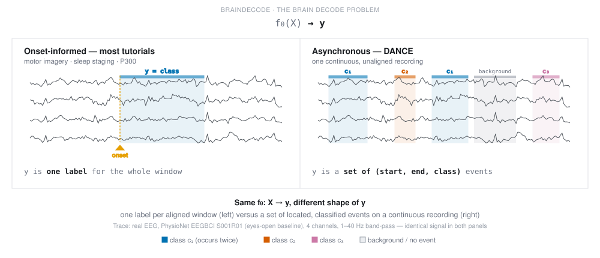

Note
Go to the end to download the full example code.
From window labels to events: asynchronous EEG decoding with DANCE#
braindecode defines brain decoding as \(f_\theta: X \to y\) (see the brain decode problem), and is explicit that the definition of \(y\) is broad. Most tutorials in this repository instantiate that mapping at a single point in the space it allows: \(X\) is a window already cut and aligned to a known onset (a motor-imagery cue, a sleep-epoch boundary, a P300 flash), and \(y\) is one categorical label for the whole window.
DANCE instantiates the same \(f_\theta: X \to y\) at a different point:
\(X\) is one long, unaligned recording, and \(y\) is the set of
(start, end, class) events \(f_\theta\) must locate and classify
itself. The definition did not change. Only the shape of \(y\) did.

This tutorial shows how to use the DANCE model
for event detection on continuous, real EEG recordings, with plain PyTorch (no
skorch, no Lightning). We reproduce, at reduced scale, the P300 setting from
the original paper [1], using the Brain Invaders BI2014a dataset [2] loaded
through MOABBDataset.
The pipeline is:
load a few subjects of continuous, real P300 EEG (BI2014a) with
MOABBDataset,preprocess with the exact minimal recipe from the paper: band-pass 0.1-100 Hz, resample to 128 Hz, per-channel robust scaling clamped to
[-16, 16],cut it into fixed-length windows with
create_fixed_length_windows()(W = 32s, matching the paper’s BI2014a configuration),turn each window’s stimulus annotations (
Target/NonTargetflashes) into a DANCE target dict (normalizedstart/endin[0, 1]plus a dense per-token class map),train
DANCEwithDanceLosson a cross-subject split (train on some subjects, evaluate on held-out ones, following the paper’s protocol), andevaluate with the event-level
f1_event()metric and a per-token macro F1 on the dense head (sklearn.metrics.f1_score()).
DANCE exposes two entry points: model.forward(x) returns the dense
per-token logits (B, num_latents, n_outputs), while model.detect(x)
returns the event set {class, start, end, dense}. Training and evaluation
below use detect (the loss needs the query set); a downstream user who only
wants a per-token prediction can call forward directly.
Note
DANCE follows a DETR-style class-0 = background / no-object convention:
real event classes are 1 .. n_outputs - 1 and class 0 is reserved
for “no event”. Here class 1 is a non-target flash and class 2 a
target flash; the target builder and both F1 metrics honour this
convention automatically.
Note
To keep the docs build fast, this tutorial uses only 3 subjects and 2 training epochs, far short of the paper’s full protocol (all subjects, 100 epochs with early stopping). Expect low F1 scores below; see the Conclusion for what changes at full scale.
# Authors: Bruno Aristimunha <b.aristimunha@gmail.com>
#
# License: MIT
random_state = 0
Loading and preprocessing the dataset#
Loading the raw recordings#
BI2014a is a Brain Invaders P300 (oddball) dataset: subjects watch a stream of flashes, most of which are “non-target” and a few “target”. We load 3 subjects: 2 for training, 1 held out for evaluation, following the paper’s cross-subject splitting protocol.
from braindecode.datasets import MOABBDataset
subject_ids = [1, 2, 3]
dataset = MOABBDataset(dataset_name="BI2014a", subject_ids=subject_ids)
0%| | 0.00/60.6M [00:00<?, ?B/s]
0%| | 14.3k/60.6M [00:00<12:47, 78.9kB/s]
0%| | 43.0k/60.6M [00:00<07:25, 136kB/s]
0%| | 100k/60.6M [00:00<04:16, 236kB/s]
0%| | 156k/60.6M [00:00<03:35, 280kB/s]
0%|▏ | 206k/60.6M [00:00<03:25, 293kB/s]
0%|▏ | 296k/60.6M [00:00<02:36, 386kB/s]
1%|▏ | 368k/60.6M [00:01<02:27, 408kB/s]
1%|▎ | 429k/60.6M [00:01<02:29, 402kB/s]
1%|▎ | 527k/60.6M [00:01<02:07, 469kB/s]
1%|▍ | 611k/60.6M [00:01<02:02, 488kB/s]
1%|▍ | 742k/60.6M [00:01<01:41, 591kB/s]
1%|▌ | 824k/60.6M [00:01<01:45, 567kB/s]
1%|▌ | 892k/60.6M [00:02<01:53, 525kB/s]
2%|▋ | 990k/60.6M [00:02<01:47, 553kB/s]
2%|▋ | 1.14M/60.6M [00:02<01:29, 665kB/s]
2%|▊ | 1.24M/60.6M [00:02<01:31, 650kB/s]
2%|▊ | 1.33M/60.6M [00:02<01:32, 638kB/s]
2%|▉ | 1.40M/60.6M [00:02<01:43, 573kB/s]
2%|▉ | 1.51M/60.6M [00:03<01:37, 606kB/s]
3%|█ | 1.64M/60.6M [00:03<01:28, 670kB/s]
3%|█ | 1.72M/60.6M [00:03<01:34, 623kB/s]
3%|█▏ | 1.89M/60.6M [00:03<01:18, 749kB/s]
3%|█▏ | 1.97M/60.6M [00:03<01:26, 680kB/s]
3%|█▎ | 2.05M/60.6M [00:03<01:32, 631kB/s]
4%|█▎ | 2.13M/60.6M [00:03<01:38, 596kB/s]
4%|█▍ | 2.23M/60.6M [00:04<01:36, 603kB/s]
4%|█▍ | 2.31M/60.6M [00:04<01:41, 577kB/s]
4%|█▌ | 2.41M/60.6M [00:04<01:38, 589kB/s]
4%|█▌ | 2.49M/60.6M [00:04<01:42, 569kB/s]
4%|█▋ | 2.59M/60.6M [00:04<01:38, 586kB/s]
4%|█▋ | 2.69M/60.6M [00:04<01:37, 596kB/s]
5%|█▋ | 2.77M/60.6M [00:05<01:41, 572kB/s]
5%|█▊ | 2.86M/60.6M [00:05<01:43, 557kB/s]
5%|█▊ | 2.96M/60.6M [00:05<01:39, 577kB/s]
5%|█▉ | 3.04M/60.6M [00:05<01:42, 559kB/s]
5%|█▉ | 3.12M/60.6M [00:05<01:45, 546kB/s]
5%|██ | 3.22M/60.6M [00:05<01:40, 570kB/s]
5%|██ | 3.30M/60.6M [00:06<01:43, 555kB/s]
6%|██▏ | 3.40M/60.6M [00:06<01:38, 578kB/s]
6%|██▏ | 3.52M/60.6M [00:06<01:31, 620kB/s]
6%|██▎ | 3.65M/60.6M [00:06<01:23, 681kB/s]
6%|██▎ | 3.75M/60.6M [00:06<01:25, 662kB/s]
6%|██▍ | 3.86M/60.6M [00:06<01:22, 684kB/s]
7%|██▌ | 3.99M/60.6M [00:07<01:17, 725kB/s]
7%|██▌ | 4.13M/60.6M [00:07<01:14, 758kB/s]
7%|██▋ | 4.24M/60.6M [00:07<01:15, 747kB/s]
7%|██▋ | 4.32M/60.6M [00:07<01:24, 664kB/s]
7%|██▊ | 4.41M/60.6M [00:07<01:28, 633kB/s]
7%|██▊ | 4.49M/60.6M [00:07<01:33, 598kB/s]
8%|██▉ | 4.64M/60.6M [00:07<01:19, 701kB/s]
8%|███ | 4.79M/60.6M [00:08<01:12, 769kB/s]
8%|███ | 4.90M/60.6M [00:08<01:13, 754kB/s]
8%|███ | 4.98M/60.6M [00:08<01:22, 671kB/s]
8%|███▏ | 5.05M/60.6M [00:08<01:31, 605kB/s]
8%|███▏ | 5.13M/60.6M [00:08<01:35, 579kB/s]
9%|███▎ | 5.23M/60.6M [00:08<01:33, 593kB/s]
9%|███▎ | 5.33M/60.6M [00:09<01:31, 603kB/s]
9%|███▍ | 5.44M/60.6M [00:09<01:25, 641kB/s]
9%|███▍ | 5.54M/60.6M [00:09<01:26, 634kB/s]
9%|███▌ | 5.63M/60.6M [00:09<01:31, 603kB/s]
9%|███▌ | 5.73M/60.6M [00:09<01:30, 608kB/s]
10%|███▋ | 5.82M/60.6M [00:09<01:29, 611kB/s]
10%|███▋ | 5.95M/60.6M [00:10<01:20, 675kB/s]
10%|███▊ | 6.07M/60.6M [00:10<01:18, 693kB/s]
10%|███▊ | 6.15M/60.6M [00:10<01:25, 640kB/s]
10%|███▉ | 6.24M/60.6M [00:10<01:29, 606kB/s]
10%|███▉ | 6.34M/60.6M [00:10<01:28, 610kB/s]
11%|████ | 6.44M/60.6M [00:10<01:27, 617kB/s]
11%|████ | 6.52M/60.6M [00:10<01:32, 586kB/s]
11%|████▏ | 6.67M/60.6M [00:11<01:18, 687kB/s]
11%|████▎ | 6.80M/60.6M [00:11<01:13, 731kB/s]
11%|████▎ | 6.95M/60.6M [00:11<01:07, 789kB/s]
12%|████▍ | 7.03M/60.6M [00:11<01:15, 708kB/s]
12%|████▍ | 7.16M/60.6M [00:11<01:11, 742kB/s]
12%|████▌ | 7.27M/60.6M [00:11<01:12, 736kB/s]
12%|████▋ | 7.40M/60.6M [00:12<01:09, 763kB/s]
12%|████▋ | 7.49M/60.6M [00:12<01:17, 689kB/s]
13%|████▊ | 7.59M/60.6M [00:12<01:18, 671kB/s]
13%|████▊ | 7.69M/60.6M [00:12<01:20, 656kB/s]
13%|████▊ | 7.77M/60.6M [00:12<01:26, 614kB/s]
13%|████▉ | 7.87M/60.6M [00:12<01:25, 615kB/s]
13%|████▉ | 7.95M/60.6M [00:13<01:29, 586kB/s]
13%|█████ | 8.03M/60.6M [00:13<01:33, 564kB/s]
13%|█████ | 8.09M/60.6M [00:13<01:41, 519kB/s]
13%|█████ | 8.16M/60.6M [00:13<01:47, 489kB/s]
14%|█████▏ | 8.33M/60.6M [00:13<01:19, 655kB/s]
14%|█████▎ | 8.48M/60.6M [00:13<01:10, 740kB/s]
14%|█████▎ | 8.56M/60.6M [00:14<01:17, 673kB/s]
14%|█████▍ | 8.63M/60.6M [00:14<01:26, 599kB/s]
14%|█████▍ | 8.76M/60.6M [00:14<01:17, 667kB/s]
15%|█████▌ | 8.89M/60.6M [00:14<01:12, 715kB/s]
15%|█████▋ | 8.99M/60.6M [00:14<01:14, 688kB/s]
15%|█████▋ | 9.12M/60.6M [00:14<01:10, 728kB/s]
15%|█████▊ | 9.27M/60.6M [00:14<01:04, 791kB/s]
15%|█████▊ | 9.35M/60.6M [00:15<01:13, 695kB/s]
16%|█████▉ | 9.42M/60.6M [00:15<01:22, 621kB/s]
16%|█████▉ | 9.53M/60.6M [00:15<01:19, 644kB/s]
16%|██████ | 9.67M/60.6M [00:15<01:12, 702kB/s]
16%|██████ | 9.75M/60.6M [00:15<01:18, 646kB/s]
16%|██████▏ | 9.86M/60.6M [00:15<01:15, 669kB/s]
16%|██████▏ | 9.95M/60.6M [00:16<01:21, 623kB/s]
17%|██████▎ | 10.0M/60.6M [00:16<01:20, 626kB/s]
17%|██████▎ | 10.1M/60.6M [00:16<01:20, 623kB/s]
17%|██████▍ | 10.2M/60.6M [00:16<01:24, 595kB/s]
17%|██████▌ | 10.4M/60.6M [00:16<01:12, 695kB/s]
17%|██████▌ | 10.5M/60.6M [00:16<01:17, 645kB/s]
17%|██████▋ | 10.6M/60.6M [00:17<01:14, 668kB/s]
18%|██████▋ | 10.7M/60.6M [00:17<01:20, 622kB/s]
18%|██████▊ | 10.8M/60.6M [00:17<01:09, 714kB/s]
18%|██████▊ | 10.9M/60.6M [00:17<01:12, 689kB/s]
18%|██████▉ | 11.0M/60.6M [00:17<01:14, 668kB/s]
18%|██████▉ | 11.1M/60.6M [00:17<01:23, 595kB/s]
18%|███████ | 11.2M/60.6M [00:17<01:14, 664kB/s]
19%|███████ | 11.3M/60.6M [00:18<01:23, 591kB/s]
19%|███████▏ | 11.4M/60.6M [00:18<01:21, 601kB/s]
19%|███████▏ | 11.4M/60.6M [00:18<01:25, 575kB/s]
19%|███████▏ | 11.5M/60.6M [00:18<01:32, 531kB/s]
19%|███████▎ | 11.6M/60.6M [00:18<01:38, 496kB/s]
19%|███████▎ | 11.7M/60.6M [00:18<01:36, 504kB/s]
19%|███████▍ | 11.8M/60.6M [00:19<01:21, 600kB/s]
20%|███████▍ | 11.9M/60.6M [00:19<01:24, 575kB/s]
20%|███████▌ | 12.0M/60.6M [00:19<01:27, 557kB/s]
20%|███████▌ | 12.1M/60.6M [00:19<01:15, 641kB/s]
20%|███████▋ | 12.2M/60.6M [00:19<01:06, 728kB/s]
20%|███████▋ | 12.3M/60.6M [00:19<01:12, 665kB/s]
21%|███████▊ | 12.4M/60.6M [00:20<01:13, 651kB/s]
21%|███████▊ | 12.5M/60.6M [00:20<01:14, 642kB/s]
21%|███████▉ | 12.6M/60.6M [00:20<01:19, 604kB/s]
21%|████████ | 12.8M/60.6M [00:20<01:07, 705kB/s]
21%|████████ | 12.8M/60.6M [00:20<01:13, 648kB/s]
21%|████████▏ | 13.0M/60.6M [00:20<01:10, 671kB/s]
22%|████████▏ | 13.0M/60.6M [00:21<01:12, 655kB/s]
22%|████████▏ | 13.1M/60.6M [00:21<01:13, 644kB/s]
22%|████████▎ | 13.2M/60.6M [00:21<01:18, 606kB/s]
22%|████████▎ | 13.3M/60.6M [00:21<01:13, 644kB/s]
22%|████████▍ | 13.5M/60.6M [00:21<01:10, 667kB/s]
22%|████████▌ | 13.6M/60.6M [00:21<01:12, 653kB/s]
23%|████████▌ | 13.6M/60.6M [00:21<01:16, 612kB/s]
23%|████████▌ | 13.7M/60.6M [00:22<01:20, 583kB/s]
23%|████████▋ | 13.9M/60.6M [00:22<01:11, 656kB/s]
23%|████████▋ | 13.9M/60.6M [00:22<01:15, 618kB/s]
23%|████████▊ | 14.1M/60.6M [00:22<01:05, 710kB/s]
23%|████████▉ | 14.2M/60.6M [00:22<01:11, 652kB/s]
24%|████████▉ | 14.2M/60.6M [00:22<01:15, 611kB/s]
24%|█████████ | 14.3M/60.6M [00:23<01:15, 613kB/s]
24%|█████████ | 14.5M/60.6M [00:23<01:08, 676kB/s]
24%|█████████▏ | 14.6M/60.6M [00:23<01:01, 747kB/s]
24%|█████████▎ | 14.8M/60.6M [00:23<00:59, 772kB/s]
25%|█████████▎ | 14.9M/60.6M [00:23<01:02, 727kB/s]
25%|█████████▎ | 14.9M/60.6M [00:23<01:08, 668kB/s]
25%|█████████▍ | 15.1M/60.6M [00:24<01:06, 684kB/s]
25%|█████████▍ | 15.1M/60.6M [00:24<01:11, 638kB/s]
25%|█████████▌ | 15.2M/60.6M [00:24<01:11, 632kB/s]
25%|█████████▌ | 15.3M/60.6M [00:24<01:15, 599kB/s]
25%|█████████▋ | 15.4M/60.6M [00:24<01:14, 606kB/s]
26%|█████████▋ | 15.5M/60.6M [00:24<01:17, 580kB/s]
26%|█████████▊ | 15.6M/60.6M [00:24<01:15, 592kB/s]
26%|█████████▊ | 15.7M/60.6M [00:25<01:07, 666kB/s]
26%|█████████▉ | 15.8M/60.6M [00:25<01:12, 621kB/s]
26%|█████████▉ | 15.9M/60.6M [00:25<01:19, 560kB/s]
26%|██████████ | 16.0M/60.6M [00:25<01:21, 546kB/s]
27%|██████████ | 16.1M/60.6M [00:25<01:07, 661kB/s]
27%|██████████▏ | 16.2M/60.6M [00:25<01:11, 619kB/s]
27%|██████████▏ | 16.3M/60.6M [00:26<01:15, 588kB/s]
27%|██████████▎ | 16.4M/60.6M [00:26<01:13, 599kB/s]
27%|██████████▎ | 16.5M/60.6M [00:26<01:16, 576kB/s]
27%|██████████▍ | 16.6M/60.6M [00:26<01:04, 685kB/s]
28%|██████████▍ | 16.7M/60.6M [00:26<01:12, 609kB/s]
28%|██████████▌ | 16.8M/60.6M [00:26<01:05, 667kB/s]
28%|██████████▌ | 16.9M/60.6M [00:27<01:06, 654kB/s]
28%|██████████▋ | 17.0M/60.6M [00:27<01:11, 610kB/s]
28%|██████████▋ | 17.1M/60.6M [00:27<01:07, 647kB/s]
28%|██████████▊ | 17.2M/60.6M [00:27<01:07, 638kB/s]
29%|██████████▊ | 17.3M/60.6M [00:27<01:02, 694kB/s]
29%|██████████▉ | 17.4M/60.6M [00:27<01:07, 641kB/s]
29%|██████████▉ | 17.5M/60.6M [00:28<01:11, 606kB/s]
29%|███████████ | 17.6M/60.6M [00:28<01:10, 610kB/s]
29%|███████████ | 17.7M/60.6M [00:28<01:03, 675kB/s]
29%|███████████▏ | 17.8M/60.6M [00:28<01:04, 658kB/s]
30%|███████████▏ | 17.9M/60.6M [00:28<01:08, 619kB/s]
30%|███████████▎ | 18.0M/60.6M [00:28<01:12, 588kB/s]
30%|███████████▍ | 18.1M/60.6M [00:28<01:01, 694kB/s]
30%|███████████▍ | 18.3M/60.6M [00:29<00:57, 737kB/s]
30%|███████████▌ | 18.4M/60.6M [00:29<00:53, 793kB/s]
31%|███████████▌ | 18.5M/60.6M [00:29<00:59, 710kB/s]
31%|███████████▋ | 18.6M/60.6M [00:29<01:01, 683kB/s]
31%|███████████▋ | 18.7M/60.6M [00:29<01:03, 664kB/s]
31%|███████████▊ | 18.8M/60.6M [00:29<01:04, 648kB/s]
31%|███████████▊ | 18.9M/60.6M [00:30<01:02, 670kB/s]
31%|███████████▉ | 19.0M/60.6M [00:30<00:58, 715kB/s]
32%|████████████ | 19.1M/60.6M [00:30<01:00, 686kB/s]
32%|████████████ | 19.2M/60.6M [00:30<01:01, 670kB/s]
32%|████████████▏ | 19.4M/60.6M [00:30<01:00, 686kB/s]
32%|████████████▏ | 19.5M/60.6M [00:30<00:56, 731kB/s]
32%|████████████▎ | 19.6M/60.6M [00:31<00:51, 788kB/s]
33%|████████████▎ | 19.7M/60.6M [00:31<00:57, 707kB/s]
33%|████████████▍ | 19.8M/60.6M [00:31<00:59, 680kB/s]
33%|████████████▌ | 19.9M/60.6M [00:31<00:58, 696kB/s]
33%|████████████▌ | 20.0M/60.6M [00:31<01:00, 673kB/s]
33%|████████████▌ | 20.1M/60.6M [00:31<01:04, 626kB/s]
33%|████████████▋ | 20.2M/60.6M [00:31<01:08, 593kB/s]
33%|████████████▋ | 20.3M/60.6M [00:32<01:10, 570kB/s]
34%|████████████▊ | 20.4M/60.6M [00:32<00:58, 681kB/s]
34%|████████████▉ | 20.5M/60.6M [00:32<01:00, 666kB/s]
34%|████████████▉ | 20.7M/60.6M [00:32<00:53, 744kB/s]
34%|█████████████ | 20.8M/60.6M [00:32<00:58, 681kB/s]
34%|█████████████ | 20.9M/60.6M [00:32<00:59, 662kB/s]
35%|█████████████▏ | 20.9M/60.6M [00:33<01:07, 589kB/s]
35%|█████████████▏ | 21.0M/60.6M [00:33<01:09, 565kB/s]
35%|█████████████▏ | 21.1M/60.6M [00:33<01:11, 549kB/s]
35%|█████████████▎ | 21.2M/60.6M [00:33<00:59, 666kB/s]
35%|█████████████▍ | 21.4M/60.6M [00:33<00:57, 685kB/s]
35%|█████████████▍ | 21.5M/60.6M [00:33<00:58, 667kB/s]
36%|█████████████▌ | 21.6M/60.6M [00:34<00:52, 741kB/s]
36%|█████████████▌ | 21.7M/60.6M [00:34<00:55, 703kB/s]
36%|█████████████▋ | 21.8M/60.6M [00:34<00:59, 652kB/s]
36%|█████████████▋ | 21.8M/60.6M [00:34<01:06, 581kB/s]
36%|█████████████▊ | 21.9M/60.6M [00:34<01:05, 594kB/s]
36%|█████████████▊ | 22.0M/60.6M [00:34<01:11, 541kB/s]
36%|█████████████▊ | 22.1M/60.6M [00:35<01:12, 533kB/s]
37%|█████████████▉ | 22.2M/60.6M [00:35<01:13, 526kB/s]
37%|█████████████▉ | 22.3M/60.6M [00:35<01:13, 522kB/s]
37%|██████████████ | 22.4M/60.6M [00:35<00:59, 645kB/s]
37%|██████████████ | 22.5M/60.6M [00:35<01:02, 611kB/s]
37%|██████████████▏ | 22.6M/60.6M [00:35<01:02, 612kB/s]
37%|██████████████▏ | 22.7M/60.6M [00:35<00:58, 650kB/s]
38%|██████████████▎ | 22.8M/60.6M [00:36<00:56, 669kB/s]
38%|██████████████▍ | 23.0M/60.6M [00:36<00:50, 748kB/s]
38%|██████████████▌ | 23.1M/60.6M [00:36<00:46, 801kB/s]
38%|██████████████▌ | 23.2M/60.6M [00:36<00:52, 715kB/s]
38%|██████████████▋ | 23.3M/60.6M [00:36<00:51, 718kB/s]
39%|██████████████▋ | 23.4M/60.6M [00:36<00:56, 657kB/s]
39%|██████████████▋ | 23.5M/60.6M [00:37<00:57, 645kB/s]
39%|██████████████▊ | 23.6M/60.6M [00:37<00:58, 637kB/s]
39%|██████████████▊ | 23.7M/60.6M [00:37<01:01, 601kB/s]
39%|██████████████▉ | 23.8M/60.6M [00:37<01:03, 577kB/s]
40%|███████████████ | 23.9M/60.6M [00:37<00:49, 744kB/s]
40%|███████████████ | 24.1M/60.6M [00:37<00:49, 737kB/s]
40%|███████████████▏ | 24.2M/60.6M [00:38<00:49, 737kB/s]
40%|███████████████▏ | 24.3M/60.6M [00:38<00:51, 701kB/s]
40%|███████████████▎ | 24.4M/60.6M [00:38<00:53, 680kB/s]
41%|███████████████▍ | 24.6M/60.6M [00:38<00:41, 877kB/s]
41%|███████████████▌ | 24.7M/60.6M [00:38<00:40, 892kB/s]
41%|███████████████▌ | 24.8M/60.6M [00:38<00:44, 794kB/s]
41%|███████████████▋ | 24.9M/60.6M [00:39<00:44, 792kB/s]
41%|███████████████▋ | 25.1M/60.6M [00:39<00:46, 771kB/s]
42%|███████████████▊ | 25.2M/60.6M [00:39<00:44, 791kB/s]
42%|███████████████▉ | 25.3M/60.6M [00:39<00:45, 768kB/s]
42%|███████████████▉ | 25.5M/60.6M [00:39<00:41, 846kB/s]
42%|████████████████ | 25.6M/60.6M [00:39<00:43, 809kB/s]
42%|████████████████ | 25.7M/60.6M [00:39<00:48, 721kB/s]
43%|████████████████▏ | 25.8M/60.6M [00:40<00:50, 688kB/s]
43%|████████████████▏ | 25.9M/60.6M [00:40<00:52, 667kB/s]
43%|████████████████▎ | 26.0M/60.6M [00:40<00:46, 748kB/s]
43%|████████████████▍ | 26.2M/60.6M [00:40<00:38, 898kB/s]
44%|████████████████▌ | 26.4M/60.6M [00:40<00:36, 938kB/s]
44%|████████████████▌ | 26.5M/60.6M [00:40<00:40, 842kB/s]
44%|████████████████▋ | 26.6M/60.6M [00:41<00:42, 806kB/s]
44%|████████████████▋ | 26.7M/60.6M [00:41<00:47, 719kB/s]
44%|████████████████▊ | 26.8M/60.6M [00:41<00:44, 751kB/s]
45%|████████████████▉ | 27.0M/60.6M [00:41<00:41, 808kB/s]
45%|████████████████▉ | 27.1M/60.6M [00:41<00:44, 753kB/s]
45%|█████████████████ | 27.1M/60.6M [00:41<00:49, 682kB/s]
45%|█████████████████ | 27.2M/60.6M [00:42<00:50, 663kB/s]
45%|█████████████████▏ | 27.4M/60.6M [00:42<00:44, 746kB/s]
45%|█████████████████▎ | 27.5M/60.6M [00:42<00:42, 770kB/s]
46%|█████████████████▎ | 27.6M/60.6M [00:42<00:43, 756kB/s]
46%|█████████████████▍ | 27.7M/60.6M [00:42<00:48, 684kB/s]
46%|█████████████████▍ | 27.8M/60.6M [00:42<00:49, 666kB/s]
46%|█████████████████▌ | 28.0M/60.6M [00:42<00:38, 836kB/s]
46%|█████████████████▋ | 28.1M/60.6M [00:43<00:40, 806kB/s]
47%|█████████████████▋ | 28.2M/60.6M [00:43<00:44, 719kB/s]
47%|█████████████████▊ | 28.3M/60.6M [00:43<00:44, 724kB/s]
47%|█████████████████▊ | 28.4M/60.6M [00:43<00:48, 661kB/s]
47%|█████████████████▉ | 28.5M/60.6M [00:43<00:49, 653kB/s]
47%|█████████████████▉ | 28.6M/60.6M [00:43<00:45, 703kB/s]
48%|█████████████████▋ | 28.9M/60.6M [00:44<00:29, 1.06MB/s]
48%|██████████████████▏ | 29.0M/60.6M [00:44<00:33, 941kB/s]
48%|██████████████████▎ | 29.2M/60.6M [00:44<00:32, 960kB/s]
48%|██████████████████▍ | 29.3M/60.6M [00:44<00:32, 951kB/s]
49%|██████████████████ | 29.6M/60.6M [00:44<00:26, 1.16MB/s]
49%|██████████████████▏ | 29.7M/60.6M [00:44<00:28, 1.06MB/s]
49%|██████████████████▋ | 29.9M/60.6M [00:45<00:31, 961kB/s]
50%|██████████████████▎ | 30.0M/60.6M [00:45<00:30, 1.01MB/s]
50%|██████████████████▍ | 30.3M/60.6M [00:45<00:26, 1.14MB/s]
50%|██████████████████▌ | 30.4M/60.6M [00:45<00:29, 1.01MB/s]
50%|███████████████████▏ | 30.5M/60.6M [00:45<00:33, 899kB/s]
51%|███████████████████▏ | 30.7M/60.6M [00:45<00:30, 996kB/s]
51%|███████████████████▎ | 30.8M/60.6M [00:46<00:33, 883kB/s]
51%|███████████████████▍ | 30.9M/60.6M [00:46<00:35, 832kB/s]
51%|███████████████████▍ | 31.0M/60.6M [00:46<00:34, 864kB/s]
51%|███████████████████▌ | 31.2M/60.6M [00:46<00:33, 884kB/s]
52%|███████████████████▋ | 31.3M/60.6M [00:46<00:33, 866kB/s]
52%|███████████████████▎ | 31.6M/60.6M [00:46<00:24, 1.20MB/s]
53%|███████████████████▍ | 31.9M/60.6M [00:46<00:22, 1.30MB/s]
53%|███████████████████▌ | 32.0M/60.6M [00:47<00:24, 1.16MB/s]
53%|███████████████████▋ | 32.3M/60.6M [00:47<00:21, 1.34MB/s]
54%|███████████████████▊ | 32.4M/60.6M [00:47<00:23, 1.19MB/s]
54%|███████████████████▉ | 32.5M/60.6M [00:47<00:26, 1.06MB/s]
54%|████████████████████▍ | 32.7M/60.6M [00:47<00:29, 943kB/s]
54%|████████████████████▌ | 32.7M/60.6M [00:47<00:33, 840kB/s]
54%|████████████████████▌ | 32.9M/60.6M [00:48<00:33, 818kB/s]
54%|████████████████████▋ | 33.0M/60.6M [00:48<01:19, 349kB/s]
55%|████████████████████▋ | 33.1M/60.6M [00:48<01:10, 391kB/s]
55%|████████████████████▊ | 33.1M/60.6M [00:49<01:08, 399kB/s]
55%|████████████████████▊ | 33.2M/60.6M [00:49<01:02, 437kB/s]
55%|████████████████████▉ | 33.4M/60.6M [00:49<00:50, 543kB/s]
55%|████████████████████▉ | 33.5M/60.6M [00:49<00:48, 563kB/s]
55%|█████████████████████ | 33.5M/60.6M [00:49<00:49, 550kB/s]
56%|█████████████████████▏ | 33.7M/60.6M [00:49<00:41, 641kB/s]
56%|█████████████████████▏ | 33.8M/60.6M [00:50<00:41, 642kB/s]
56%|█████████████████████▎ | 33.9M/60.6M [00:50<00:40, 665kB/s]
56%|█████████████████████▎ | 34.0M/60.6M [00:50<00:40, 652kB/s]
56%|█████████████████████▍ | 34.1M/60.6M [00:50<00:41, 644kB/s]
56%|█████████████████████▍ | 34.2M/60.6M [00:50<00:39, 669kB/s]
57%|█████████████████████▌ | 34.4M/60.6M [00:50<00:32, 805kB/s]
57%|█████████████████████▋ | 34.5M/60.6M [00:51<00:32, 802kB/s]
57%|█████████████████████▋ | 34.6M/60.6M [00:51<00:34, 747kB/s]
57%|█████████████████████▊ | 34.7M/60.6M [00:51<00:35, 722kB/s]
58%|█████████████████████▉ | 34.9M/60.6M [00:51<00:31, 815kB/s]
58%|█████████████████████▉ | 35.0M/60.6M [00:51<00:30, 830kB/s]
58%|██████████████████████ | 35.1M/60.6M [00:51<00:31, 798kB/s]
59%|█████████████████████▋ | 35.5M/60.6M [00:52<00:20, 1.25MB/s]
60%|██████████████████████ | 36.1M/60.6M [00:52<00:11, 2.07MB/s]
61%|██████████████████████▍ | 36.7M/60.6M [00:52<00:09, 2.45MB/s]
62%|███████████████████████ | 37.7M/60.6M [00:52<00:06, 3.74MB/s]
63%|███████████████████████▍ | 38.4M/60.6M [00:52<00:05, 3.99MB/s]
67%|████████████████████████▌ | 40.3M/60.6M [00:52<00:03, 6.29MB/s]
69%|█████████████████████████▋ | 42.0M/60.6M [00:52<00:02, 7.63MB/s]
71%|██████████████████████████▎ | 43.0M/60.6M [00:53<00:02, 7.30MB/s]
72%|██████████████████████████▋ | 43.8M/60.6M [00:53<00:04, 4.04MB/s]
73%|███████████████████████████ | 44.3M/60.6M [00:53<00:04, 3.25MB/s]
74%|███████████████████████████▎ | 44.8M/60.6M [00:54<00:05, 2.64MB/s]
75%|███████████████████████████▌ | 45.1M/60.6M [00:54<00:06, 2.54MB/s]
75%|███████████████████████████▊ | 45.4M/60.6M [00:54<00:07, 2.00MB/s]
75%|███████████████████████████▉ | 45.7M/60.6M [00:54<00:07, 1.91MB/s]
76%|████████████████████████████ | 45.9M/60.6M [00:55<00:08, 1.79MB/s]
76%|████████████████████████████▏ | 46.1M/60.6M [00:55<00:08, 1.66MB/s]
76%|████████████████████████████▎ | 46.3M/60.6M [00:55<00:09, 1.52MB/s]
77%|████████████████████████████▎ | 46.4M/60.6M [00:55<00:10, 1.38MB/s]
77%|████████████████████████████▌ | 46.7M/60.6M [00:55<00:10, 1.39MB/s]
77%|████████████████████████████▌ | 46.9M/60.6M [00:55<00:10, 1.35MB/s]
78%|████████████████████████████▋ | 47.1M/60.6M [00:55<00:10, 1.32MB/s]
78%|████████████████████████████▉ | 47.3M/60.6M [00:56<00:09, 1.39MB/s]
79%|█████████████████████████████ | 47.6M/60.6M [00:56<00:08, 1.59MB/s]
79%|█████████████████████████████▏ | 47.8M/60.6M [00:56<00:08, 1.42MB/s]
79%|█████████████████████████████▎ | 48.0M/60.6M [00:56<00:09, 1.37MB/s]
80%|█████████████████████████████▍ | 48.2M/60.6M [00:56<00:09, 1.27MB/s]
80%|█████████████████████████████▌ | 48.4M/60.6M [00:56<00:09, 1.34MB/s]
80%|█████████████████████████████▋ | 48.6M/60.6M [00:57<00:08, 1.37MB/s]
81%|█████████████████████████████▊ | 48.9M/60.6M [00:57<00:08, 1.39MB/s]
81%|█████████████████████████████▉ | 49.1M/60.6M [00:57<00:08, 1.35MB/s]
81%|██████████████████████████████ | 49.2M/60.6M [00:57<00:09, 1.25MB/s]
82%|██████████████████████████████▏ | 49.4M/60.6M [00:57<00:08, 1.31MB/s]
82%|██████████████████████████████▎ | 49.7M/60.6M [00:57<00:07, 1.39MB/s]
82%|██████████████████████████████▍ | 49.9M/60.6M [00:58<00:08, 1.28MB/s]
83%|██████████████████████████████▌ | 50.1M/60.6M [00:58<00:08, 1.27MB/s]
83%|██████████████████████████████▋ | 50.3M/60.6M [00:58<00:07, 1.36MB/s]
84%|██████████████████████████████▉ | 50.6M/60.6M [00:58<00:06, 1.48MB/s]
84%|███████████████████████████████ | 50.8M/60.6M [00:58<00:06, 1.53MB/s]
84%|███████████████████████████████▏ | 51.1M/60.6M [00:58<00:06, 1.53MB/s]
85%|███████████████████████████████▎ | 51.3M/60.6M [00:58<00:06, 1.44MB/s]
85%|███████████████████████████████▍ | 51.6M/60.6M [00:59<00:05, 1.51MB/s]
86%|███████████████████████████████▋ | 51.9M/60.6M [00:59<00:05, 1.65MB/s]
86%|███████████████████████████████▊ | 52.1M/60.6M [00:59<00:05, 1.53MB/s]
87%|████████████████████████████████ | 52.4M/60.6M [00:59<00:04, 1.78MB/s]
87%|████████████████████████████████▏ | 52.7M/60.6M [00:59<00:04, 1.74MB/s]
87%|████████████████████████████████▎ | 53.0M/60.6M [00:59<00:04, 1.69MB/s]
88%|████████████████████████████████▍ | 53.2M/60.6M [01:00<00:04, 1.59MB/s]
88%|████████████████████████████████▌ | 53.4M/60.6M [01:00<00:04, 1.48MB/s]
88%|████████████████████████████████▋ | 53.5M/60.6M [01:00<00:05, 1.35MB/s]
89%|████████████████████████████████▊ | 53.7M/60.6M [01:00<00:05, 1.26MB/s]
89%|████████████████████████████████▉ | 53.9M/60.6M [01:00<00:04, 1.35MB/s]
89%|█████████████████████████████████ | 54.2M/60.6M [01:00<00:04, 1.41MB/s]
90%|█████████████████████████████████▏ | 54.4M/60.6M [01:01<00:04, 1.42MB/s]
90%|█████████████████████████████████▍ | 54.7M/60.6M [01:01<00:03, 1.56MB/s]
91%|█████████████████████████████████▌ | 54.9M/60.6M [01:01<00:03, 1.46MB/s]
91%|█████████████████████████████████▋ | 55.1M/60.6M [01:01<00:03, 1.40MB/s]
91%|█████████████████████████████████▊ | 55.3M/60.6M [01:01<00:04, 1.29MB/s]
92%|█████████████████████████████████▉ | 55.5M/60.6M [01:01<00:04, 1.22MB/s]
92%|█████████████████████████████████▉ | 55.6M/60.6M [01:02<00:04, 1.17MB/s]
92%|██████████████████████████████████▏ | 55.9M/60.6M [01:02<00:03, 1.31MB/s]
93%|██████████████████████████████████▏ | 56.0M/60.6M [01:02<00:03, 1.23MB/s]
93%|██████████████████████████████████▍ | 56.3M/60.6M [01:02<00:03, 1.39MB/s]
93%|██████████████████████████████████▌ | 56.5M/60.6M [01:02<00:03, 1.29MB/s]
94%|██████████████████████████████████▋ | 56.7M/60.6M [01:02<00:02, 1.33MB/s]
94%|██████████████████████████████████▊ | 57.0M/60.6M [01:02<00:02, 1.43MB/s]
94%|██████████████████████████████████▉ | 57.1M/60.6M [01:03<00:02, 1.31MB/s]
95%|███████████████████████████████████ | 57.3M/60.6M [01:03<00:02, 1.23MB/s]
95%|███████████████████████████████████ | 57.4M/60.6M [01:03<00:02, 1.09MB/s]
95%|████████████████████████████████████ | 57.5M/60.6M [01:03<00:03, 972kB/s]
95%|████████████████████████████████████▏ | 57.6M/60.6M [01:03<00:03, 866kB/s]
95%|████████████████████████████████████▏ | 57.7M/60.6M [01:03<00:03, 773kB/s]
95%|████████████████████████████████████▎ | 57.8M/60.6M [01:04<00:04, 690kB/s]
96%|████████████████████████████████████▎ | 57.9M/60.6M [01:04<00:04, 664kB/s]
96%|████████████████████████████████████▍ | 58.0M/60.6M [01:04<00:03, 652kB/s]
96%|████████████████████████████████████▍ | 58.1M/60.6M [01:04<00:03, 704kB/s]
96%|████████████████████████████████████▌ | 58.3M/60.6M [01:04<00:02, 803kB/s]
97%|███████████████████████████████████▊ | 58.5M/60.6M [01:04<00:01, 1.03MB/s]
97%|███████████████████████████████████▉ | 58.8M/60.6M [01:05<00:01, 1.28MB/s]
98%|████████████████████████████████████ | 59.1M/60.6M [01:05<00:01, 1.33MB/s]
98%|████████████████████████████████████▏| 59.3M/60.6M [01:05<00:00, 1.39MB/s]
98%|████████████████████████████████████▎| 59.5M/60.6M [01:05<00:00, 1.34MB/s]
99%|████████████████████████████████████▌| 59.8M/60.6M [01:05<00:00, 1.44MB/s]
99%|████████████████████████████████████▌| 59.9M/60.6M [01:05<00:00, 1.32MB/s]
99%|████████████████████████████████████▋| 60.1M/60.6M [01:05<00:00, 1.24MB/s]
100%|████████████████████████████████████▊| 60.3M/60.6M [01:06<00:00, 1.18MB/s]
100%|████████████████████████████████████▉| 60.5M/60.6M [01:06<00:00, 1.33MB/s]
60.7MB [01:06, 1.24MB/s]
60.9MB [01:06, 1.18MB/s]
61.0MB [01:06, 1.14MB/s]
0%| | 0.00/60.6M [00:00<?, ?B/s]
100%|██████████████████████████████████████| 60.6M/60.6M [00:00<00:00, 317GB/s]
0%| | 0.00/29.6M [00:00<?, ?B/s]
0%| | 14.3k/29.6M [00:00<05:59, 82.3kB/s]
0%| | 45.1k/29.6M [00:00<03:21, 147kB/s]
0%|▏ | 100k/29.6M [00:00<02:03, 239kB/s]
1%|▏ | 157k/29.6M [00:00<01:42, 286kB/s]
1%|▎ | 223k/29.6M [00:00<01:27, 336kB/s]
1%|▍ | 311k/29.6M [00:00<01:10, 413kB/s]
1%|▍ | 378k/29.6M [00:01<01:09, 418kB/s]
1%|▌ | 432k/29.6M [00:01<01:14, 393kB/s]
2%|▋ | 530k/29.6M [00:01<01:02, 462kB/s]
2%|▊ | 645k/29.6M [00:01<00:53, 546kB/s]
3%|█ | 760k/29.6M [00:01<00:47, 603kB/s]
3%|█▏ | 860k/29.6M [00:01<00:47, 609kB/s]
3%|█▎ | 1.01M/29.6M [00:02<00:40, 713kB/s]
4%|█▍ | 1.16M/29.6M [00:02<00:36, 784kB/s]
4%|█▌ | 1.24M/29.6M [00:02<00:40, 705kB/s]
4%|█▋ | 1.32M/29.6M [00:02<00:43, 650kB/s]
5%|█▊ | 1.42M/29.6M [00:02<00:43, 644kB/s]
5%|█▉ | 1.54M/29.6M [00:02<00:41, 672kB/s]
6%|██▏ | 1.67M/29.6M [00:03<00:38, 724kB/s]
6%|██▎ | 1.82M/29.6M [00:03<00:35, 792kB/s]
7%|██▌ | 1.97M/29.6M [00:03<00:33, 836kB/s]
7%|██▋ | 2.12M/29.6M [00:03<00:31, 866kB/s]
8%|██▉ | 2.25M/29.6M [00:03<00:31, 856kB/s]
8%|██▉ | 2.33M/29.6M [00:03<00:35, 763kB/s]
8%|███ | 2.41M/29.6M [00:03<00:39, 683kB/s]
9%|███▏ | 2.53M/29.6M [00:04<00:38, 701kB/s]
9%|███▎ | 2.61M/29.6M [00:04<00:41, 645kB/s]
9%|███▌ | 2.74M/29.6M [00:04<00:38, 706kB/s]
10%|███▋ | 2.87M/29.6M [00:04<00:35, 746kB/s]
10%|███▉ | 3.02M/29.6M [00:04<00:33, 804kB/s]
10%|███▉ | 3.10M/29.6M [00:04<00:36, 720kB/s]
11%|████▏ | 3.25M/29.6M [00:05<00:33, 788kB/s]
11%|████▎ | 3.39M/29.6M [00:05<00:32, 806kB/s]
12%|████▌ | 3.53M/29.6M [00:05<00:30, 845kB/s]
12%|████▋ | 3.63M/29.6M [00:05<00:33, 779kB/s]
13%|████▊ | 3.76M/29.6M [00:05<00:32, 795kB/s]
13%|█████ | 3.91M/29.6M [00:05<00:30, 842kB/s]
14%|█████▏ | 4.00M/29.6M [00:05<00:34, 752kB/s]
14%|█████▏ | 4.08M/29.6M [00:06<00:37, 677kB/s]
14%|█████▍ | 4.23M/29.6M [00:06<00:33, 755kB/s]
15%|█████▋ | 4.39M/29.6M [00:06<00:29, 843kB/s]
15%|█████▋ | 4.47M/29.6M [00:06<00:33, 752kB/s]
15%|█████▊ | 4.55M/29.6M [00:06<00:37, 672kB/s]
16%|█████▉ | 4.62M/29.6M [00:06<00:41, 603kB/s]
16%|██████ | 4.72M/29.6M [00:07<00:40, 611kB/s]
16%|██████▏ | 4.83M/29.6M [00:07<00:38, 647kB/s]
17%|██████▍ | 4.96M/29.6M [00:07<00:34, 707kB/s]
17%|██████▌ | 5.06M/29.6M [00:07<00:35, 682kB/s]
18%|██████▋ | 5.18M/29.6M [00:07<00:35, 697kB/s]
18%|██████▊ | 5.29M/29.6M [00:07<00:34, 707kB/s]
18%|██████▉ | 5.38M/29.6M [00:08<00:36, 655kB/s]
19%|███████ | 5.47M/29.6M [00:08<00:37, 644kB/s]
19%|███████▎ | 5.65M/29.6M [00:08<00:30, 796kB/s]
20%|███████▍ | 5.77M/29.6M [00:08<00:30, 780kB/s]
20%|███████▋ | 5.97M/29.6M [00:08<00:25, 921kB/s]
21%|███████▊ | 6.07M/29.6M [00:08<00:28, 833kB/s]
21%|███████▉ | 6.16M/29.6M [00:08<00:30, 770kB/s]
21%|████████ | 6.26M/29.6M [00:09<00:31, 731kB/s]
22%|████████▏ | 6.36M/29.6M [00:09<00:33, 699kB/s]
22%|████████▎ | 6.51M/29.6M [00:09<00:29, 775kB/s]
23%|████████▋ | 6.74M/29.6M [00:09<00:23, 986kB/s]
23%|████████▊ | 6.88M/29.6M [00:09<00:24, 937kB/s]
24%|████████▉ | 6.97M/29.6M [00:09<00:26, 845kB/s]
24%|█████████ | 7.06M/29.6M [00:10<00:29, 753kB/s]
24%|█████████▏ | 7.14M/29.6M [00:10<00:33, 677kB/s]
25%|█████████▍ | 7.30M/29.6M [00:10<00:28, 786kB/s]
25%|█████████▌ | 7.40M/29.6M [00:10<00:30, 738kB/s]
25%|█████████▋ | 7.50M/29.6M [00:10<00:31, 704kB/s]
26%|█████████▊ | 7.60M/29.6M [00:10<00:32, 680kB/s]
26%|█████████▉ | 7.69M/29.6M [00:11<00:32, 663kB/s]
26%|██████████ | 7.79M/29.6M [00:11<00:33, 652kB/s]
27%|██████████▏ | 7.91M/29.6M [00:11<00:32, 675kB/s]
27%|██████████▎ | 8.05M/29.6M [00:11<00:28, 754kB/s]
28%|██████████▍ | 8.15M/29.6M [00:11<00:29, 716kB/s]
28%|██████████▌ | 8.25M/29.6M [00:11<00:30, 692kB/s]
28%|██████████▋ | 8.34M/29.6M [00:11<00:33, 641kB/s]
29%|██████████▊ | 8.43M/29.6M [00:12<00:33, 637kB/s]
29%|██████████▉ | 8.53M/29.6M [00:12<00:33, 633kB/s]
29%|███████████ | 8.65M/29.6M [00:12<00:31, 667kB/s]
30%|███████████▎ | 8.78M/29.6M [00:12<00:28, 717kB/s]
30%|███████████▍ | 8.88M/29.6M [00:12<00:29, 693kB/s]
30%|███████████▌ | 8.99M/29.6M [00:12<00:29, 704kB/s]
31%|███████████▋ | 9.09M/29.6M [00:13<00:30, 680kB/s]
31%|███████████▊ | 9.24M/29.6M [00:13<00:26, 758kB/s]
32%|███████████▉ | 9.32M/29.6M [00:13<00:29, 691kB/s]
32%|████████████▏ | 9.44M/29.6M [00:13<00:28, 702kB/s]
32%|████████████▎ | 9.56M/29.6M [00:13<00:28, 714kB/s]
33%|████████████▍ | 9.67M/29.6M [00:13<00:27, 719kB/s]
33%|████████████▌ | 9.75M/29.6M [00:14<00:30, 660kB/s]
34%|████████████▋ | 9.92M/29.6M [00:14<00:25, 775kB/s]
34%|████████████▊ | 10.0M/29.6M [00:14<00:28, 699kB/s]
34%|████████████▉ | 10.1M/29.6M [00:14<00:30, 645kB/s]
35%|█████████████ | 10.2M/29.6M [00:14<00:27, 706kB/s]
35%|█████████████▏ | 10.3M/29.6M [00:14<00:28, 682kB/s]
35%|█████████████▍ | 10.4M/29.6M [00:14<00:27, 700kB/s]
36%|█████████████▌ | 10.5M/29.6M [00:15<00:28, 679kB/s]
36%|█████████████▋ | 10.6M/29.6M [00:15<00:28, 667kB/s]
36%|█████████████▊ | 10.7M/29.6M [00:15<00:28, 655kB/s]
37%|█████████████▉ | 10.9M/29.6M [00:15<00:25, 740kB/s]
37%|██████████████ | 11.0M/29.6M [00:15<00:26, 705kB/s]
37%|██████████████▏ | 11.1M/29.6M [00:15<00:25, 713kB/s]
38%|██████████████▍ | 11.2M/29.6M [00:16<00:25, 720kB/s]
38%|██████████████▌ | 11.4M/29.6M [00:16<00:21, 850kB/s]
39%|██████████████▊ | 11.5M/29.6M [00:16<00:21, 849kB/s]
39%|██████████████▉ | 11.6M/29.6M [00:16<00:22, 782kB/s]
40%|███████████████ | 11.7M/29.6M [00:16<00:23, 766kB/s]
40%|███████████████▏ | 11.8M/29.6M [00:16<00:25, 692kB/s]
40%|███████████████▎ | 11.9M/29.6M [00:16<00:26, 674kB/s]
41%|███████████████▍ | 12.0M/29.6M [00:17<00:28, 628kB/s]
41%|███████████████▌ | 12.1M/29.6M [00:17<00:24, 721kB/s]
42%|███████████████▊ | 12.3M/29.6M [00:17<00:21, 789kB/s]
42%|███████████████▉ | 12.4M/29.6M [00:17<00:22, 773kB/s]
42%|████████████████ | 12.5M/29.6M [00:17<00:21, 790kB/s]
43%|████████████████▏ | 12.6M/29.6M [00:17<00:22, 746kB/s]
43%|████████████████▎ | 12.7M/29.6M [00:18<00:24, 679kB/s]
43%|████████████████▍ | 12.8M/29.6M [00:18<00:25, 662kB/s]
44%|████████████████▋ | 13.0M/29.6M [00:18<00:22, 746kB/s]
44%|████████████████▊ | 13.1M/29.6M [00:18<00:23, 714kB/s]
45%|█████████████████ | 13.3M/29.6M [00:18<00:18, 875kB/s]
45%|█████████████████▏ | 13.4M/29.6M [00:18<00:18, 894kB/s]
46%|█████████████████▎ | 13.5M/29.6M [00:19<00:19, 814kB/s]
46%|█████████████████▌ | 13.6M/29.6M [00:19<00:19, 820kB/s]
46%|█████████████████▋ | 13.8M/29.6M [00:19<00:19, 795kB/s]
47%|█████████████████▊ | 13.8M/29.6M [00:19<00:22, 713kB/s]
47%|█████████████████▉ | 14.0M/29.6M [00:19<00:21, 722kB/s]
47%|██████████████████ | 14.0M/29.6M [00:19<00:22, 687kB/s]
48%|██████████████████▏ | 14.1M/29.6M [00:19<00:22, 672kB/s]
48%|██████████████████▎ | 14.2M/29.6M [00:20<00:23, 658kB/s]
49%|██████████████████▍ | 14.3M/29.6M [00:20<00:23, 648kB/s]
49%|██████████████████▌ | 14.4M/29.6M [00:20<00:23, 641kB/s]
49%|██████████████████▋ | 14.5M/29.6M [00:20<00:23, 636kB/s]
49%|██████████████████▊ | 14.6M/29.6M [00:20<00:23, 633kB/s]
50%|██████████████████▉ | 14.7M/29.6M [00:20<00:23, 630kB/s]
50%|███████████████████ | 14.9M/29.6M [00:21<00:21, 690kB/s]
51%|███████████████████▏ | 15.0M/29.6M [00:21<00:21, 675kB/s]
51%|███████████████████▎ | 15.1M/29.6M [00:21<00:21, 682kB/s]
51%|███████████████████▌ | 15.2M/29.6M [00:21<00:20, 707kB/s]
52%|███████████████████▋ | 15.3M/29.6M [00:21<00:20, 683kB/s]
52%|███████████████████▊ | 15.4M/29.6M [00:21<00:20, 701kB/s]
52%|███████████████████▉ | 15.5M/29.6M [00:22<00:21, 646kB/s]
53%|████████████████████ | 15.6M/29.6M [00:22<00:21, 641kB/s]
53%|████████████████████▏ | 15.7M/29.6M [00:22<00:21, 637kB/s]
53%|████████████████████▎ | 15.8M/29.6M [00:22<00:20, 665kB/s]
54%|████████████████████▍ | 15.9M/29.6M [00:22<00:19, 684kB/s]
54%|████████████████████▌ | 16.0M/29.6M [00:22<00:21, 636kB/s]
54%|████████████████████▋ | 16.1M/29.6M [00:22<00:21, 633kB/s]
55%|████████████████████▉ | 16.3M/29.6M [00:23<00:17, 754kB/s]
55%|█████████████████████ | 16.3M/29.6M [00:23<00:19, 685kB/s]
56%|█████████████████████ | 16.4M/29.6M [00:23<00:20, 640kB/s]
56%|█████████████████████▎ | 16.5M/29.6M [00:23<00:19, 671kB/s]
56%|█████████████████████▍ | 16.7M/29.6M [00:23<00:17, 753kB/s]
57%|█████████████████████▏ | 17.0M/29.6M [00:23<00:12, 1.03MB/s]
58%|█████████████████████▉ | 17.1M/29.6M [00:24<00:12, 971kB/s]
58%|██████████████████████▏ | 17.2M/29.6M [00:24<00:12, 962kB/s]
59%|██████████████████████▎ | 17.4M/29.6M [00:24<00:13, 892kB/s]
59%|██████████████████████▍ | 17.5M/29.6M [00:24<00:14, 812kB/s]
59%|██████████████████████▌ | 17.6M/29.6M [00:24<00:15, 756kB/s]
60%|██████████████████████▋ | 17.6M/29.6M [00:24<00:17, 685kB/s]
60%|██████████████████████▊ | 17.7M/29.6M [00:25<00:16, 702kB/s]
60%|██████████████████████▉ | 17.9M/29.6M [00:25<00:15, 742kB/s]
61%|███████████████████████ | 18.0M/29.6M [00:25<00:17, 676kB/s]
61%|███████████████████████▏ | 18.0M/29.6M [00:25<00:18, 629kB/s]
62%|███████████████████████▎ | 18.2M/29.6M [00:25<00:15, 726kB/s]
62%|███████████████████████▍ | 18.3M/29.6M [00:25<00:16, 696kB/s]
62%|███████████████████████▋ | 18.4M/29.6M [00:25<00:16, 679kB/s]
63%|███████████████████████▊ | 18.5M/29.6M [00:26<00:16, 662kB/s]
63%|███████████████████████▉ | 18.6M/29.6M [00:26<00:16, 653kB/s]
63%|████████████████████████ | 18.7M/29.6M [00:26<00:16, 676kB/s]
64%|████████████████████████▏ | 18.8M/29.6M [00:26<00:14, 723kB/s]
64%|████████████████████████▎ | 18.9M/29.6M [00:26<00:14, 725kB/s]
64%|████████████████████████▍ | 19.0M/29.6M [00:26<00:15, 660kB/s]
65%|████████████████████████▊ | 19.3M/29.6M [00:27<00:11, 920kB/s]
65%|████████████████████████▊ | 19.4M/29.6M [00:27<00:12, 816kB/s]
66%|█████████████████████████ | 19.5M/29.6M [00:27<00:12, 820kB/s]
66%|█████████████████████████▏ | 19.6M/29.6M [00:27<00:13, 740kB/s]
67%|█████████████████████████▎ | 19.7M/29.6M [00:27<00:12, 797kB/s]
67%|█████████████████████████▍ | 19.8M/29.6M [00:27<00:12, 751kB/s]
67%|█████████████████████████▋ | 20.0M/29.6M [00:27<00:12, 776kB/s]
68%|█████████████████████████▊ | 20.1M/29.6M [00:28<00:12, 735kB/s]
68%|█████████████████████████▊ | 20.1M/29.6M [00:28<00:14, 669kB/s]
69%|██████████████████████████ | 20.3M/29.6M [00:28<00:11, 780kB/s]
69%|██████████████████████████▎ | 20.5M/29.6M [00:28<00:10, 890kB/s]
70%|██████████████████████████▍ | 20.6M/29.6M [00:28<00:11, 808kB/s]
70%|██████████████████████████▋ | 20.8M/29.6M [00:28<00:09, 976kB/s]
71%|██████████████████████████▉ | 20.9M/29.6M [00:29<00:08, 965kB/s]
71%|███████████████████████████ | 21.0M/29.6M [00:29<00:09, 860kB/s]
71%|███████████████████████████▏ | 21.1M/29.6M [00:29<00:11, 768kB/s]
72%|███████████████████████████▏ | 21.2M/29.6M [00:29<00:12, 694kB/s]
72%|███████████████████████████▍ | 21.3M/29.6M [00:29<00:12, 675kB/s]
72%|███████████████████████████▌ | 21.4M/29.6M [00:29<00:12, 664kB/s]
73%|███████████████████████████▋ | 21.5M/29.6M [00:30<00:12, 651kB/s]
73%|███████████████████████████▊ | 21.6M/29.6M [00:30<00:12, 648kB/s]
73%|███████████████████████████▉ | 21.7M/29.6M [00:30<00:12, 642kB/s]
74%|████████████████████████████ | 21.8M/29.6M [00:30<00:12, 641kB/s]
74%|████████████████████████████▏ | 21.9M/29.6M [00:30<00:11, 667kB/s]
75%|████████████████████████████▎ | 22.0M/29.6M [00:30<00:10, 690kB/s]
75%|████████████████████████████▌ | 22.2M/29.6M [00:30<00:09, 795kB/s]
75%|████████████████████████████▋ | 22.3M/29.6M [00:31<00:09, 776kB/s]
76%|████████████████████████████▊ | 22.4M/29.6M [00:31<00:08, 797kB/s]
76%|████████████████████████████▉ | 22.5M/29.6M [00:31<00:09, 746kB/s]
77%|█████████████████████████████▏ | 22.7M/29.6M [00:31<00:08, 803kB/s]
77%|█████████████████████████████▎ | 22.8M/29.6M [00:31<00:08, 811kB/s]
78%|█████████████████████████████▍ | 23.0M/29.6M [00:31<00:08, 819kB/s]
78%|█████████████████████████████▋ | 23.1M/29.6M [00:32<00:08, 792kB/s]
78%|█████████████████████████████▋ | 23.2M/29.6M [00:32<00:09, 708kB/s]
79%|█████████████████████████████▊ | 23.2M/29.6M [00:32<00:10, 633kB/s]
79%|██████████████████████████████ | 23.4M/29.6M [00:32<00:08, 724kB/s]
79%|██████████████████████████████▏ | 23.5M/29.6M [00:32<00:09, 665kB/s]
80%|██████████████████████████████▎ | 23.6M/29.6M [00:32<00:09, 657kB/s]
80%|██████████████████████████████▍ | 23.7M/29.6M [00:33<00:09, 647kB/s]
80%|██████████████████████████████▌ | 23.8M/29.6M [00:33<00:09, 645kB/s]
81%|██████████████████████████████▋ | 23.8M/29.6M [00:33<00:08, 639kB/s]
81%|██████████████████████████████▊ | 24.0M/29.6M [00:33<00:08, 671kB/s]
81%|██████████████████████████████▉ | 24.0M/29.6M [00:33<00:08, 626kB/s]
82%|███████████████████████████████ | 24.1M/29.6M [00:33<00:08, 629kB/s]
82%|███████████████████████████████▏ | 24.3M/29.6M [00:33<00:07, 691kB/s]
82%|███████████████████████████████▎ | 24.4M/29.6M [00:34<00:07, 676kB/s]
83%|███████████████████████████████▍ | 24.5M/29.6M [00:34<00:07, 660kB/s]
83%|███████████████████████████████▌ | 24.6M/29.6M [00:34<00:07, 685kB/s]
84%|███████████████████████████████▋ | 24.7M/29.6M [00:34<00:07, 693kB/s]
84%|███████████████████████████████▉ | 24.9M/29.6M [00:34<00:06, 768kB/s]
85%|████████████████████████████████▏ | 25.0M/29.6M [00:34<00:05, 819kB/s]
85%|████████████████████████████████▏ | 25.1M/29.6M [00:35<00:06, 732kB/s]
85%|████████████████████████████████▍ | 25.2M/29.6M [00:35<00:05, 760kB/s]
86%|████████████████████████████████▌ | 25.3M/29.6M [00:35<00:05, 750kB/s]
86%|████████████████████████████████▋ | 25.4M/29.6M [00:35<00:05, 712kB/s]
86%|████████████████████████████████▊ | 25.5M/29.6M [00:35<00:06, 654kB/s]
87%|████████████████████████████████▉ | 25.6M/29.6M [00:35<00:06, 650kB/s]
87%|█████████████████████████████████ | 25.7M/29.6M [00:36<00:06, 643kB/s]
87%|█████████████████████████████████▏ | 25.9M/29.6M [00:36<00:05, 731kB/s]
88%|█████████████████████████████████▎ | 26.0M/29.6M [00:36<00:05, 699kB/s]
88%|█████████████████████████████████▍ | 26.1M/29.6M [00:36<00:05, 677kB/s]
88%|█████████████████████████████████▌ | 26.2M/29.6M [00:36<00:04, 693kB/s]
89%|█████████████████████████████████▊ | 26.3M/29.6M [00:36<00:04, 708kB/s]
90%|██████████████████████████████████ | 26.5M/29.6M [00:36<00:03, 870kB/s]
90%|██████████████████████████████████▏ | 26.6M/29.6M [00:37<00:03, 773kB/s]
90%|██████████████████████████████████▎ | 26.7M/29.6M [00:37<00:03, 815kB/s]
91%|██████████████████████████████████▍ | 26.8M/29.6M [00:37<00:03, 793kB/s]
91%|██████████████████████████████████▌ | 26.9M/29.6M [00:37<00:03, 774kB/s]
91%|██████████████████████████████████▋ | 27.0M/29.6M [00:37<00:03, 699kB/s]
92%|██████████████████████████████████▉ | 27.2M/29.6M [00:37<00:02, 802kB/s]
92%|███████████████████████████████████▏ | 27.3M/29.6M [00:38<00:02, 846kB/s]
93%|███████████████████████████████████▎ | 27.5M/29.6M [00:38<00:02, 811kB/s]
93%|███████████████████████████████████▍ | 27.6M/29.6M [00:38<00:02, 818kB/s]
94%|███████████████████████████████████▌ | 27.7M/29.6M [00:38<00:02, 728kB/s]
94%|███████████████████████████████████▋ | 27.8M/29.6M [00:38<00:02, 698kB/s]
94%|███████████████████████████████████▊ | 27.9M/29.6M [00:38<00:02, 676kB/s]
95%|███████████████████████████████████▉ | 28.0M/29.6M [00:39<00:02, 758kB/s]
95%|████████████████████████████████████▏ | 28.1M/29.6M [00:39<00:01, 751kB/s]
96%|████████████████████████████████████▎ | 28.3M/29.6M [00:39<00:01, 841kB/s]
96%|████████████████████████████████████▌ | 28.4M/29.6M [00:39<00:01, 810kB/s]
97%|████████████████████████████████████▋ | 28.5M/29.6M [00:39<00:01, 817kB/s]
97%|████████████████████████████████████▊ | 28.6M/29.6M [00:39<00:01, 764kB/s]
97%|████████████████████████████████████▉ | 28.7M/29.6M [00:39<00:01, 722kB/s]
98%|█████████████████████████████████████ | 28.8M/29.6M [00:40<00:01, 697kB/s]
98%|█████████████████████████████████████▏| 29.0M/29.6M [00:40<00:00, 706kB/s]
98%|█████████████████████████████████████▍| 29.1M/29.6M [00:40<00:00, 806kB/s]
99%|█████████████████████████████████████▌| 29.2M/29.6M [00:40<00:00, 754kB/s]
99%|█████████████████████████████████████▋| 29.3M/29.6M [00:40<00:00, 686kB/s]
100%|█████████████████████████████████████▉| 29.5M/29.6M [00:40<00:00, 859kB/s]
29.6MB [00:41, 788kB/s]
29.7MB [00:41, 739kB/s]
0%| | 0.00/29.6M [00:00<?, ?B/s]
100%|██████████████████████████████████████| 29.6M/29.6M [00:00<00:00, 176GB/s]
0%| | 0.00/87.9M [00:00<?, ?B/s]
0%| | 1.02k/87.9M [00:00<4:20:37, 5.62kB/s]
0%| | 33.8k/87.9M [00:00<12:26, 118kB/s]
0%| | 89.1k/87.9M [00:00<06:37, 221kB/s]
0%| | 183k/87.9M [00:00<03:59, 366kB/s]
0%| | 231k/87.9M [00:00<04:14, 345kB/s]
0%|▏ | 292k/87.9M [00:00<04:05, 357kB/s]
0%|▏ | 419k/87.9M [00:01<02:53, 504kB/s]
1%|▏ | 517k/87.9M [00:01<02:41, 540kB/s]
1%|▎ | 601k/87.9M [00:01<02:42, 537kB/s]
1%|▎ | 732k/87.9M [00:01<02:19, 623kB/s]
1%|▎ | 814k/87.9M [00:01<02:28, 587kB/s]
1%|▍ | 912k/87.9M [00:01<02:25, 597kB/s]
1%|▍ | 995k/87.9M [00:02<02:31, 572kB/s]
1%|▍ | 1.06M/87.9M [00:02<02:42, 533kB/s]
1%|▌ | 1.21M/87.9M [00:02<02:13, 652kB/s]
2%|▌ | 1.34M/87.9M [00:02<02:02, 705kB/s]
2%|▌ | 1.44M/87.9M [00:02<02:07, 680kB/s]
2%|▋ | 1.52M/87.9M [00:02<02:16, 632kB/s]
2%|▋ | 1.62M/87.9M [00:03<02:17, 629kB/s]
2%|▊ | 1.74M/87.9M [00:03<02:11, 656kB/s]
2%|▊ | 1.85M/87.9M [00:03<02:08, 670kB/s]
2%|▊ | 1.92M/87.9M [00:03<02:23, 598kB/s]
2%|▉ | 2.03M/87.9M [00:03<02:15, 635kB/s]
2%|▉ | 2.13M/87.9M [00:03<02:15, 635kB/s]
3%|▉ | 2.25M/87.9M [00:03<02:09, 662kB/s]
3%|█ | 2.33M/87.9M [00:04<02:17, 623kB/s]
3%|█ | 2.41M/87.9M [00:04<02:27, 579kB/s]
3%|█ | 2.48M/87.9M [00:04<02:41, 530kB/s]
3%|█ | 2.56M/87.9M [00:04<02:41, 530kB/s]
3%|█▏ | 2.66M/87.9M [00:04<02:34, 553kB/s]
3%|█▏ | 2.72M/87.9M [00:04<02:52, 493kB/s]
3%|█▏ | 2.80M/87.9M [00:05<02:54, 488kB/s]
3%|█▎ | 2.89M/87.9M [00:05<02:41, 526kB/s]
3%|█▎ | 3.01M/87.9M [00:05<02:25, 585kB/s]
4%|█▎ | 3.09M/87.9M [00:05<02:30, 564kB/s]
4%|█▍ | 3.24M/87.9M [00:05<02:06, 670kB/s]
4%|█▍ | 3.31M/87.9M [00:05<02:21, 598kB/s]
4%|█▍ | 3.43M/87.9M [00:06<02:07, 663kB/s]
4%|█▌ | 3.53M/87.9M [00:06<02:08, 654kB/s]
4%|█▌ | 3.60M/87.9M [00:06<02:24, 584kB/s]
4%|█▌ | 3.72M/87.9M [00:06<02:14, 628kB/s]
4%|█▋ | 3.83M/87.9M [00:06<02:08, 656kB/s]
4%|█▋ | 3.93M/87.9M [00:06<02:09, 647kB/s]
5%|█▋ | 4.03M/87.9M [00:07<02:11, 639kB/s]
5%|█▊ | 4.13M/87.9M [00:07<02:12, 633kB/s]
5%|█▊ | 4.21M/87.9M [00:07<02:19, 599kB/s]
5%|█▊ | 4.33M/87.9M [00:07<02:10, 640kB/s]
5%|█▉ | 4.43M/87.9M [00:07<02:11, 633kB/s]
5%|█▉ | 4.52M/87.9M [00:07<02:12, 630kB/s]
5%|██ | 4.66M/87.9M [00:07<02:00, 689kB/s]
6%|██ | 4.84M/87.9M [00:08<01:40, 824kB/s]
6%|██▏ | 4.95M/87.9M [00:08<01:44, 797kB/s]
6%|██▏ | 5.04M/87.9M [00:08<01:56, 711kB/s]
6%|██▏ | 5.15M/87.9M [00:08<01:55, 715kB/s]
6%|██▎ | 5.27M/87.9M [00:08<01:55, 717kB/s]
6%|██▎ | 5.38M/87.9M [00:08<01:54, 719kB/s]
6%|██▍ | 5.51M/87.9M [00:09<01:48, 756kB/s]
6%|██▍ | 5.60M/87.9M [00:09<02:00, 684kB/s]
7%|██▌ | 5.84M/87.9M [00:09<01:26, 951kB/s]
7%|██▌ | 5.96M/87.9M [00:09<01:32, 882kB/s]
7%|██▌ | 6.06M/87.9M [00:09<01:41, 804kB/s]
7%|██▋ | 6.22M/87.9M [00:09<01:33, 877kB/s]
7%|██▋ | 6.34M/87.9M [00:10<01:37, 836kB/s]
7%|██▊ | 6.45M/87.9M [00:10<01:41, 802kB/s]
8%|██▊ | 6.60M/87.9M [00:10<01:36, 839kB/s]
8%|██▉ | 6.70M/87.9M [00:10<01:44, 776kB/s]
8%|██▉ | 6.80M/87.9M [00:10<01:51, 728kB/s]
8%|██▉ | 6.90M/87.9M [00:10<01:56, 696kB/s]
8%|███ | 7.00M/87.9M [00:10<01:59, 677kB/s]
8%|███ | 7.11M/87.9M [00:11<01:56, 691kB/s]
8%|███ | 7.21M/87.9M [00:11<01:59, 674kB/s]
8%|███▏ | 7.33M/87.9M [00:11<01:57, 688kB/s]
8%|███▏ | 7.44M/87.9M [00:11<01:55, 699kB/s]
9%|███▎ | 7.60M/87.9M [00:11<01:40, 800kB/s]
9%|███▎ | 7.75M/87.9M [00:11<01:35, 840kB/s]
9%|███▍ | 7.92M/87.9M [00:12<01:29, 891kB/s]
9%|███▍ | 8.01M/87.9M [00:12<01:38, 809kB/s]
9%|███▌ | 8.11M/87.9M [00:12<01:45, 756kB/s]
9%|███▌ | 8.26M/87.9M [00:12<01:38, 808kB/s]
9%|███▌ | 8.35M/87.9M [00:12<01:49, 726kB/s]
10%|███▋ | 8.42M/87.9M [00:12<02:03, 646kB/s]
10%|███▋ | 8.53M/87.9M [00:13<02:00, 660kB/s]
10%|███▋ | 8.64M/87.9M [00:13<01:56, 679kB/s]
10%|███▊ | 8.74M/87.9M [00:13<01:58, 666kB/s]
10%|███▊ | 8.93M/87.9M [00:13<01:37, 812kB/s]
10%|███▉ | 9.01M/87.9M [00:13<01:48, 725kB/s]
10%|███▉ | 9.11M/87.9M [00:13<01:53, 695kB/s]
11%|███▉ | 9.25M/87.9M [00:14<01:42, 766kB/s]
11%|████ | 9.35M/87.9M [00:14<01:48, 724kB/s]
11%|████ | 9.45M/87.9M [00:14<01:52, 699kB/s]
11%|████ | 9.52M/87.9M [00:14<02:05, 624kB/s]
11%|████▏ | 9.63M/87.9M [00:14<02:01, 644kB/s]
11%|████▏ | 9.73M/87.9M [00:14<02:02, 637kB/s]
11%|████▎ | 9.93M/87.9M [00:14<01:35, 819kB/s]
11%|████▎ | 10.0M/87.9M [00:15<01:46, 732kB/s]
12%|████▍ | 10.1M/87.9M [00:15<01:42, 761kB/s]
12%|████▍ | 10.2M/87.9M [00:15<01:52, 693kB/s]
12%|████▍ | 10.3M/87.9M [00:15<01:50, 703kB/s]
12%|████▌ | 10.4M/87.9M [00:15<01:53, 682kB/s]
12%|████▌ | 10.5M/87.9M [00:15<02:02, 631kB/s]
12%|████▌ | 10.6M/87.9M [00:16<02:09, 597kB/s]
12%|████▋ | 10.7M/87.9M [00:16<02:07, 604kB/s]
12%|████▋ | 10.8M/87.9M [00:16<02:12, 580kB/s]
12%|████▋ | 10.9M/87.9M [00:16<02:03, 625kB/s]
13%|████▊ | 11.0M/87.9M [00:16<01:57, 655kB/s]
13%|████▊ | 11.2M/87.9M [00:16<01:44, 738kB/s]
13%|████▊ | 11.2M/87.9M [00:17<01:54, 672kB/s]
13%|████▉ | 11.4M/87.9M [00:17<01:51, 687kB/s]
13%|████▉ | 11.5M/87.9M [00:17<01:54, 665kB/s]
13%|█████ | 11.6M/87.9M [00:17<01:42, 744kB/s]
13%|█████ | 11.8M/87.9M [00:17<01:25, 891kB/s]
14%|█████▏ | 12.0M/87.9M [00:17<01:19, 954kB/s]
14%|█████▏ | 12.1M/87.9M [00:17<01:28, 861kB/s]
14%|█████▎ | 12.2M/87.9M [00:18<01:42, 741kB/s]
14%|█████▎ | 12.3M/87.9M [00:18<01:47, 702kB/s]
14%|█████▎ | 12.4M/87.9M [00:18<01:51, 679kB/s]
14%|█████▍ | 12.5M/87.9M [00:18<01:44, 723kB/s]
14%|█████▍ | 12.7M/87.9M [00:18<01:25, 876kB/s]
15%|█████▌ | 12.8M/87.9M [00:18<01:27, 862kB/s]
15%|█████▌ | 12.9M/87.9M [00:19<01:37, 768kB/s]
15%|█████▋ | 13.1M/87.9M [00:19<01:33, 805kB/s]
15%|█████▋ | 13.2M/87.9M [00:19<01:40, 747kB/s]
15%|█████▋ | 13.3M/87.9M [00:19<01:47, 696kB/s]
15%|█████▊ | 13.4M/87.9M [00:19<01:50, 674kB/s]
15%|█████▊ | 13.6M/87.9M [00:19<01:28, 838kB/s]
16%|█████▉ | 13.7M/87.9M [00:20<01:36, 770kB/s]
16%|█████▉ | 13.8M/87.9M [00:20<01:37, 757kB/s]
16%|██████ | 13.9M/87.9M [00:20<01:38, 752kB/s]
16%|██████ | 14.0M/87.9M [00:20<01:35, 773kB/s]
16%|██████ | 14.1M/87.9M [00:20<01:45, 702kB/s]
16%|██████▏ | 14.2M/87.9M [00:20<01:39, 739kB/s]
16%|██████▏ | 14.3M/87.9M [00:21<01:44, 704kB/s]
17%|██████▏ | 14.7M/87.9M [00:21<01:02, 1.18MB/s]
17%|██████▏ | 14.8M/87.9M [00:21<01:08, 1.07MB/s]
17%|██████▎ | 15.0M/87.9M [00:21<01:04, 1.13MB/s]
17%|██████▎ | 15.1M/87.9M [00:21<01:12, 1.01MB/s]
17%|██████▌ | 15.2M/87.9M [00:21<01:21, 897kB/s]
17%|██████▋ | 15.3M/87.9M [00:21<01:30, 800kB/s]
18%|██████▋ | 15.4M/87.9M [00:22<01:35, 763kB/s]
18%|██████▋ | 15.5M/87.9M [00:22<01:39, 724kB/s]
18%|██████▊ | 15.6M/87.9M [00:22<01:44, 693kB/s]
18%|██████▊ | 15.8M/87.9M [00:22<01:30, 796kB/s]
18%|██████▉ | 16.0M/87.9M [00:22<01:23, 865kB/s]
19%|██████▊ | 16.3M/87.9M [00:22<00:57, 1.26MB/s]
19%|██████▉ | 16.4M/87.9M [00:23<01:04, 1.11MB/s]
19%|███████▏ | 16.5M/87.9M [00:23<01:12, 990kB/s]
19%|███████▏ | 16.7M/87.9M [00:23<01:14, 958kB/s]
19%|███████▎ | 16.8M/87.9M [00:24<03:12, 370kB/s]
19%|███████▎ | 16.9M/87.9M [00:24<02:51, 414kB/s]
19%|███████▎ | 17.0M/87.9M [00:24<02:49, 419kB/s]
19%|███████▎ | 17.0M/87.9M [00:24<02:50, 416kB/s]
19%|███████▍ | 17.1M/87.9M [00:24<02:36, 451kB/s]
20%|███████▍ | 17.3M/87.9M [00:25<02:06, 557kB/s]
20%|███████▌ | 17.4M/87.9M [00:25<01:51, 631kB/s]
20%|███████▌ | 17.5M/87.9M [00:25<01:52, 628kB/s]
20%|███████▌ | 17.6M/87.9M [00:25<01:52, 626kB/s]
20%|███████▋ | 17.7M/87.9M [00:25<01:57, 599kB/s]
20%|███████▋ | 17.8M/87.9M [00:25<01:40, 695kB/s]
20%|███████▋ | 17.9M/87.9M [00:26<01:51, 626kB/s]
21%|███████▊ | 18.0M/87.9M [00:26<01:39, 703kB/s]
21%|███████▊ | 18.1M/87.9M [00:26<01:47, 649kB/s]
21%|███████▊ | 18.2M/87.9M [00:26<01:54, 610kB/s]
21%|███████▉ | 18.3M/87.9M [00:26<02:06, 552kB/s]
21%|███████▉ | 18.4M/87.9M [00:26<01:43, 669kB/s]
21%|███████▉ | 18.5M/87.9M [00:26<01:50, 628kB/s]
21%|████████ | 18.6M/87.9M [00:27<01:56, 594kB/s]
21%|████████ | 18.7M/87.9M [00:27<01:54, 602kB/s]
21%|████████▏ | 18.8M/87.9M [00:27<01:43, 670kB/s]
21%|████████▏ | 18.9M/87.9M [00:27<01:50, 624kB/s]
22%|████████▏ | 19.0M/87.9M [00:27<01:36, 715kB/s]
22%|████████▎ | 19.2M/87.9M [00:27<01:32, 747kB/s]
22%|████████▎ | 19.2M/87.9M [00:28<01:41, 678kB/s]
22%|████████▎ | 19.4M/87.9M [00:28<01:35, 721kB/s]
22%|████████▍ | 19.5M/87.9M [00:28<01:30, 755kB/s]
22%|████████▍ | 19.6M/87.9M [00:28<01:39, 686kB/s]
22%|████████▌ | 19.7M/87.9M [00:28<01:37, 697kB/s]
23%|████████▌ | 19.8M/87.9M [00:28<01:45, 643kB/s]
23%|████████▌ | 19.9M/87.9M [00:29<01:52, 606kB/s]
23%|████████▋ | 20.0M/87.9M [00:29<01:51, 611kB/s]
23%|████████▋ | 20.0M/87.9M [00:29<02:02, 554kB/s]
23%|████████▋ | 20.1M/87.9M [00:29<01:57, 576kB/s]
23%|████████▊ | 20.3M/87.9M [00:29<01:43, 654kB/s]
23%|████████▊ | 20.4M/87.9M [00:29<01:31, 740kB/s]
23%|████████▉ | 20.6M/87.9M [00:29<01:10, 955kB/s]
24%|████████▉ | 20.7M/87.9M [00:30<01:18, 850kB/s]
24%|█████████ | 20.8M/87.9M [00:30<01:25, 784kB/s]
24%|█████████ | 20.9M/87.9M [00:30<01:35, 704kB/s]
24%|█████████ | 21.0M/87.9M [00:30<01:36, 694kB/s]
24%|█████████▏ | 21.1M/87.9M [00:30<01:39, 670kB/s]
24%|█████████▏ | 21.2M/87.9M [00:30<01:46, 625kB/s]
24%|█████████▏ | 21.4M/87.9M [00:31<01:37, 686kB/s]
24%|█████████▎ | 21.4M/87.9M [00:31<01:44, 636kB/s]
25%|█████████▎ | 21.6M/87.9M [00:31<01:27, 759kB/s]
25%|█████████▍ | 21.7M/87.9M [00:31<01:28, 748kB/s]
25%|█████████▍ | 21.8M/87.9M [00:31<01:33, 709kB/s]
25%|█████████▍ | 22.0M/87.9M [00:31<01:25, 775kB/s]
25%|█████████▌ | 22.0M/87.9M [00:32<01:34, 700kB/s]
25%|█████████▌ | 22.1M/87.9M [00:32<01:41, 648kB/s]
25%|█████████▌ | 22.2M/87.9M [00:32<01:48, 608kB/s]
25%|█████████▋ | 22.3M/87.9M [00:32<01:47, 612kB/s]
25%|█████████▋ | 22.4M/87.9M [00:32<01:52, 584kB/s]
26%|█████████▋ | 22.5M/87.9M [00:32<01:44, 626kB/s]
26%|█████████▊ | 22.6M/87.9M [00:32<01:43, 629kB/s]
26%|█████████▊ | 22.7M/87.9M [00:33<01:34, 687kB/s]
26%|█████████▉ | 22.9M/87.9M [00:33<01:28, 731kB/s]
26%|█████████▉ | 23.0M/87.9M [00:33<01:33, 695kB/s]
26%|█████████▉ | 23.1M/87.9M [00:33<01:21, 799kB/s]
26%|██████████ | 23.3M/87.9M [00:33<01:19, 812kB/s]
27%|██████████ | 23.3M/87.9M [00:33<01:29, 724kB/s]
27%|██████████▏ | 23.5M/87.9M [00:34<01:18, 819kB/s]
27%|██████████▏ | 23.7M/87.9M [00:34<01:15, 851kB/s]
27%|██████████▎ | 23.7M/87.9M [00:34<01:24, 759kB/s]
27%|██████████▎ | 23.8M/87.9M [00:34<01:34, 677kB/s]
27%|██████████▎ | 24.0M/87.9M [00:34<01:25, 752kB/s]
27%|██████████▍ | 24.1M/87.9M [00:34<01:29, 713kB/s]
27%|██████████▍ | 24.2M/87.9M [00:35<01:32, 686kB/s]
28%|██████████▍ | 24.2M/87.9M [00:35<01:40, 634kB/s]
28%|██████████▌ | 24.3M/87.9M [00:35<01:40, 631kB/s]
28%|██████████▌ | 24.5M/87.9M [00:35<01:36, 659kB/s]
28%|██████████▌ | 24.5M/87.9M [00:35<01:44, 608kB/s]
28%|██████████▋ | 24.7M/87.9M [00:35<01:33, 673kB/s]
28%|██████████▋ | 24.8M/87.9M [00:36<01:31, 688kB/s]
28%|██████████▊ | 24.9M/87.9M [00:36<01:38, 641kB/s]
28%|██████████▊ | 25.0M/87.9M [00:36<01:39, 632kB/s]
29%|██████████▊ | 25.1M/87.9M [00:36<01:44, 600kB/s]
29%|██████████▉ | 25.2M/87.9M [00:36<01:29, 698kB/s]
29%|██████████▉ | 25.4M/87.9M [00:36<01:21, 772kB/s]
29%|███████████ | 25.5M/87.9M [00:36<01:16, 813kB/s]
29%|███████████ | 25.6M/87.9M [00:37<01:22, 752kB/s]
29%|███████████ | 25.7M/87.9M [00:37<01:20, 775kB/s]
29%|███████████▏ | 25.8M/87.9M [00:37<01:21, 759kB/s]
30%|███████████▏ | 25.9M/87.9M [00:37<01:26, 720kB/s]
30%|███████████▎ | 26.1M/87.9M [00:37<01:22, 752kB/s]
30%|███████████▎ | 26.2M/87.9M [00:37<01:30, 682kB/s]
30%|███████████▎ | 26.3M/87.9M [00:38<01:24, 726kB/s]
30%|███████████▍ | 26.4M/87.9M [00:38<01:20, 760kB/s]
30%|███████████▍ | 26.6M/87.9M [00:38<01:18, 781kB/s]
30%|███████████▌ | 26.6M/87.9M [00:38<01:26, 706kB/s]
30%|███████████▌ | 26.8M/87.9M [00:38<01:22, 743kB/s]
31%|███████████▋ | 26.9M/87.9M [00:38<01:15, 804kB/s]
31%|███████████▋ | 27.1M/87.9M [00:39<01:14, 815kB/s]
31%|███████████▋ | 27.2M/87.9M [00:39<01:20, 757kB/s]
31%|███████████▊ | 27.2M/87.9M [00:39<01:28, 689kB/s]
31%|███████████▊ | 27.4M/87.9M [00:39<01:19, 758kB/s]
31%|███████████▉ | 27.5M/87.9M [00:39<01:17, 783kB/s]
31%|███████████▉ | 27.6M/87.9M [00:39<01:22, 735kB/s]
32%|███████████▉ | 27.7M/87.9M [00:39<01:25, 705kB/s]
32%|████████████ | 27.8M/87.9M [00:40<01:28, 680kB/s]
32%|████████████ | 27.9M/87.9M [00:40<01:34, 635kB/s]
32%|████████████ | 28.0M/87.9M [00:40<01:22, 724kB/s]
32%|████████████▏ | 28.1M/87.9M [00:40<01:29, 666kB/s]
32%|████████████▏ | 28.2M/87.9M [00:40<01:31, 653kB/s]
32%|████████████▏ | 28.3M/87.9M [00:40<01:31, 648kB/s]
32%|████████████▎ | 28.4M/87.9M [00:41<01:32, 640kB/s]
33%|████████████▎ | 28.6M/87.9M [00:41<01:15, 786kB/s]
33%|████████████▏ | 28.9M/87.9M [00:41<00:56, 1.05MB/s]
33%|████████████▏ | 29.0M/87.9M [00:41<00:56, 1.04MB/s]
33%|████████████▌ | 29.1M/87.9M [00:41<01:03, 925kB/s]
33%|████████████▋ | 29.2M/87.9M [00:41<01:11, 826kB/s]
33%|████████████▋ | 29.3M/87.9M [00:42<01:19, 736kB/s]
33%|████████████▋ | 29.4M/87.9M [00:42<01:19, 737kB/s]
34%|████████████▊ | 29.5M/87.9M [00:42<01:27, 670kB/s]
34%|████████████▊ | 29.6M/87.9M [00:42<01:28, 656kB/s]
34%|████████████▊ | 29.7M/87.9M [00:42<01:21, 711kB/s]
34%|████████████▉ | 29.9M/87.9M [00:42<01:09, 840kB/s]
34%|████████████▉ | 30.1M/87.9M [00:43<01:09, 836kB/s]
34%|█████████████ | 30.2M/87.9M [00:43<01:09, 830kB/s]
35%|█████████████ | 30.3M/87.9M [00:43<01:04, 895kB/s]
35%|█████████████▏ | 30.5M/87.9M [00:43<01:08, 843kB/s]
35%|█████████████▏ | 30.6M/87.9M [00:43<01:05, 880kB/s]
35%|█████████████▎ | 30.7M/87.9M [00:43<01:11, 803kB/s]
35%|█████████████▎ | 30.8M/87.9M [00:43<01:16, 747kB/s]
35%|█████████████▎ | 30.9M/87.9M [00:44<01:23, 679kB/s]
35%|█████████████▍ | 31.0M/87.9M [00:44<01:18, 723kB/s]
35%|█████████████▍ | 31.1M/87.9M [00:44<01:25, 661kB/s]
36%|█████████████▌ | 31.2M/87.9M [00:44<01:23, 680kB/s]
36%|█████████████▌ | 31.4M/87.9M [00:44<01:11, 791kB/s]
36%|█████████████▋ | 31.5M/87.9M [00:44<01:09, 806kB/s]
36%|█████████████▋ | 31.6M/87.9M [00:45<01:11, 782kB/s]
36%|█████████████▋ | 31.8M/87.9M [00:45<01:17, 725kB/s]
36%|█████████████▊ | 31.8M/87.9M [00:45<01:20, 695kB/s]
36%|█████████████▊ | 31.9M/87.9M [00:45<01:22, 677kB/s]
36%|█████████████▊ | 32.0M/87.9M [00:45<01:24, 661kB/s]
37%|█████████████▉ | 32.2M/87.9M [00:45<01:06, 833kB/s]
37%|█████████████▉ | 32.3M/87.9M [00:46<01:12, 769kB/s]
37%|██████████████ | 32.5M/87.9M [00:46<01:13, 751kB/s]
37%|██████████████ | 32.6M/87.9M [00:46<01:17, 712kB/s]
37%|██████████████ | 32.7M/87.9M [00:46<01:20, 685kB/s]
37%|██████████████▏ | 32.8M/87.9M [00:46<01:12, 763kB/s]
37%|██████████████▏ | 32.9M/87.9M [00:46<01:12, 754kB/s]
38%|██████████████▎ | 33.1M/87.9M [00:46<01:10, 776kB/s]
38%|██████████████▎ | 33.1M/87.9M [00:47<01:15, 730kB/s]
38%|██████████████▍ | 33.3M/87.9M [00:47<01:03, 855kB/s]
38%|██████████████▍ | 33.5M/87.9M [00:47<00:57, 944kB/s]
38%|██████████████▌ | 33.6M/87.9M [00:47<00:59, 914kB/s]
39%|██████████████▏ | 33.8M/87.9M [00:47<00:53, 1.01MB/s]
39%|██████████████▋ | 33.9M/87.9M [00:47<01:00, 896kB/s]
39%|██████████████▋ | 34.0M/87.9M [00:48<01:07, 797kB/s]
39%|██████████████▊ | 34.3M/87.9M [00:48<00:53, 999kB/s]
39%|██████████████▊ | 34.4M/87.9M [00:48<01:00, 890kB/s]
39%|██████████████▉ | 34.5M/87.9M [00:48<01:06, 806kB/s]
39%|███████████████ | 34.7M/87.9M [00:48<00:53, 998kB/s]
40%|███████████████ | 34.8M/87.9M [00:48<00:57, 921kB/s]
40%|███████████████ | 34.9M/87.9M [00:49<01:03, 830kB/s]
40%|███████████████▏ | 35.0M/87.9M [00:49<01:05, 802kB/s]
40%|███████████████▏ | 35.1M/87.9M [00:49<01:10, 749kB/s]
40%|███████████████▏ | 35.2M/87.9M [00:49<01:10, 742kB/s]
40%|███████████████▎ | 35.3M/87.9M [00:49<01:14, 706kB/s]
40%|███████████████▎ | 35.4M/87.9M [00:49<01:16, 684kB/s]
40%|███████████████▍ | 35.6M/87.9M [00:50<01:08, 759kB/s]
41%|███████████████▍ | 35.7M/87.9M [00:50<01:12, 717kB/s]
41%|███████████████▍ | 35.8M/87.9M [00:50<01:16, 681kB/s]
41%|███████████████▌ | 35.9M/87.9M [00:50<01:11, 729kB/s]
41%|███████████████▌ | 36.0M/87.9M [00:50<01:11, 728kB/s]
41%|███████████████▌ | 36.1M/87.9M [00:50<01:17, 669kB/s]
41%|███████████████▋ | 36.2M/87.9M [00:50<01:18, 655kB/s]
41%|███████████████▋ | 36.3M/87.9M [00:51<01:15, 680kB/s]
41%|███████████████▊ | 36.5M/87.9M [00:51<01:11, 725kB/s]
42%|███████████████▊ | 36.6M/87.9M [00:51<01:02, 819kB/s]
42%|███████████████▉ | 36.8M/87.9M [00:51<00:52, 975kB/s]
42%|███████████████▉ | 37.0M/87.9M [00:51<00:54, 931kB/s]
42%|████████████████ | 37.1M/87.9M [00:51<01:00, 835kB/s]
42%|████████████████ | 37.2M/87.9M [00:52<01:03, 804kB/s]
42%|████████████████▏ | 37.3M/87.9M [00:52<01:00, 842kB/s]
43%|████████████████▏ | 37.4M/87.9M [00:52<01:05, 775kB/s]
43%|████████████████▏ | 37.6M/87.9M [00:52<01:01, 822kB/s]
43%|████████████████▎ | 37.7M/87.9M [00:52<01:06, 760kB/s]
43%|████████████████▎ | 37.8M/87.9M [00:52<01:12, 692kB/s]
43%|████████████████▎ | 37.9M/87.9M [00:53<01:14, 671kB/s]
43%|████████████████▍ | 38.0M/87.9M [00:53<01:15, 660kB/s]
43%|████████████████▍ | 38.1M/87.9M [00:53<01:13, 679kB/s]
43%|████████████████▌ | 38.2M/87.9M [00:53<01:05, 759kB/s]
44%|████████████████▌ | 38.3M/87.9M [00:53<01:09, 718kB/s]
44%|████████████████▌ | 38.4M/87.9M [00:53<01:15, 658kB/s]
44%|████████████████▋ | 38.5M/87.9M [00:53<01:12, 678kB/s]
44%|████████████████▋ | 38.6M/87.9M [00:54<01:14, 665kB/s]
44%|████████████████▊ | 38.9M/87.9M [00:54<00:54, 903kB/s]
44%|████████████████▊ | 39.0M/87.9M [00:54<00:59, 819kB/s]
44%|████████████████▉ | 39.0M/87.9M [00:54<01:07, 722kB/s]
45%|████████████████▉ | 39.1M/87.9M [00:54<01:10, 693kB/s]
45%|████████████████▉ | 39.3M/87.9M [00:54<01:03, 768kB/s]
45%|█████████████████ | 39.4M/87.9M [00:55<01:07, 723kB/s]
45%|█████████████████ | 39.5M/87.9M [00:55<01:06, 724kB/s]
45%|█████████████████▏ | 39.6M/87.9M [00:55<01:04, 754kB/s]
45%|█████████████████▏ | 39.7M/87.9M [00:55<01:10, 688kB/s]
45%|█████████████████▏ | 39.8M/87.9M [00:55<01:08, 699kB/s]
46%|█████████████████▎ | 40.0M/87.9M [00:55<00:57, 835kB/s]
46%|█████████████████▎ | 40.1M/87.9M [00:56<00:57, 830kB/s]
46%|█████████████████▍ | 40.3M/87.9M [00:56<00:59, 798kB/s]
46%|█████████████████▍ | 40.3M/87.9M [00:56<01:06, 717kB/s]
46%|█████████████████▍ | 40.4M/87.9M [00:56<01:08, 688kB/s]
46%|█████████████████▌ | 40.5M/87.9M [00:56<01:13, 641kB/s]
46%|█████████████████▌ | 40.6M/87.9M [00:56<01:18, 604kB/s]
46%|█████████████████▌ | 40.8M/87.9M [00:56<01:03, 737kB/s]
46%|█████████████████▋ | 40.9M/87.9M [00:57<01:06, 704kB/s]
47%|█████████████████▊ | 41.1M/87.9M [00:57<00:50, 932kB/s]
47%|█████████████████▊ | 41.2M/87.9M [00:57<00:55, 840kB/s]
47%|█████████████████▊ | 41.3M/87.9M [00:57<00:55, 837kB/s]
47%|█████████████████▉ | 41.4M/87.9M [00:57<01:02, 745kB/s]
47%|█████████████████▉ | 41.6M/87.9M [00:57<00:55, 831kB/s]
47%|██████████████████ | 41.7M/87.9M [00:58<00:55, 830kB/s]
48%|██████████████████ | 41.8M/87.9M [00:58<00:57, 795kB/s]
48%|██████████████████ | 41.9M/87.9M [00:58<01:01, 742kB/s]
48%|██████████████████▏ | 42.0M/87.9M [00:58<01:05, 706kB/s]
48%|██████████████████▏ | 42.1M/87.9M [00:58<01:06, 684kB/s]
48%|██████████████████▎ | 42.2M/87.9M [00:58<01:08, 666kB/s]
48%|██████████████████▎ | 42.4M/87.9M [00:59<01:03, 718kB/s]
48%|██████████████████▎ | 42.5M/87.9M [00:59<00:57, 787kB/s]
48%|██████████████████▍ | 42.6M/87.9M [00:59<01:01, 737kB/s]
49%|██████████████████▍ | 42.7M/87.9M [00:59<00:58, 767kB/s]
49%|██████████████████▌ | 42.9M/87.9M [00:59<01:00, 746kB/s]
49%|██████████████████▌ | 43.0M/87.9M [00:59<00:53, 833kB/s]
49%|██████████████████▋ | 43.2M/87.9M [01:00<00:46, 959kB/s]
49%|██████████████████▎ | 43.5M/87.9M [01:00<00:39, 1.14MB/s]
50%|██████████████████▎ | 43.6M/87.9M [01:00<00:42, 1.05MB/s]
50%|██████████████████▉ | 43.7M/87.9M [01:00<00:47, 930kB/s]
50%|██████████████████▉ | 43.8M/87.9M [01:00<00:53, 832kB/s]
50%|██████████████████▉ | 43.9M/87.9M [01:00<00:57, 769kB/s]
50%|███████████████████ | 44.0M/87.9M [01:00<00:55, 787kB/s]
50%|███████████████████ | 44.1M/87.9M [01:01<00:59, 738kB/s]
50%|███████████████████▏ | 44.3M/87.9M [01:01<00:54, 796kB/s]
50%|███████████████████▏ | 44.4M/87.9M [01:01<00:58, 744kB/s]
51%|███████████████████▏ | 44.5M/87.9M [01:01<00:58, 742kB/s]
51%|███████████████████▎ | 44.6M/87.9M [01:01<00:58, 737kB/s]
51%|███████████████████▎ | 44.7M/87.9M [01:01<01:01, 702kB/s]
51%|███████████████████▎ | 44.8M/87.9M [01:02<01:00, 707kB/s]
51%|███████████████████▍ | 44.9M/87.9M [01:02<00:57, 743kB/s]
51%|███████████████████▍ | 45.1M/87.9M [01:02<00:58, 738kB/s]
51%|███████████████████▌ | 45.2M/87.9M [01:02<01:00, 707kB/s]
52%|███████████████████▌ | 45.3M/87.9M [01:02<00:50, 840kB/s]
52%|███████████████████▋ | 45.4M/87.9M [01:02<00:54, 774kB/s]
52%|███████████████████▋ | 45.6M/87.9M [01:03<00:51, 819kB/s]
52%|███████████████████▋ | 45.7M/87.9M [01:03<00:55, 760kB/s]
52%|███████████████████▊ | 45.9M/87.9M [01:03<00:45, 921kB/s]
52%|███████████████████▉ | 46.0M/87.9M [01:03<00:50, 833kB/s]
52%|███████████████████▉ | 46.1M/87.9M [01:03<00:52, 801kB/s]
53%|███████████████████▉ | 46.2M/87.9M [01:03<00:55, 752kB/s]
53%|████████████████████ | 46.4M/87.9M [01:03<00:47, 868kB/s]
53%|████████████████████ | 46.5M/87.9M [01:04<00:53, 772kB/s]
53%|████████████████████▏ | 46.6M/87.9M [01:04<00:57, 717kB/s]
53%|████████████████████▏ | 46.7M/87.9M [01:04<00:59, 693kB/s]
53%|████████████████████▏ | 46.8M/87.9M [01:04<00:53, 764kB/s]
53%|████████████████████▎ | 46.9M/87.9M [01:04<00:54, 753kB/s]
54%|████████████████████▎ | 47.1M/87.9M [01:04<00:52, 775kB/s]
54%|████████████████████▍ | 47.2M/87.9M [01:05<00:45, 885kB/s]
54%|████████████████████▍ | 47.3M/87.9M [01:05<00:50, 810kB/s]
54%|████████████████████▌ | 47.4M/87.9M [01:05<00:53, 754kB/s]
54%|████████████████████▌ | 47.5M/87.9M [01:05<00:56, 718kB/s]
54%|████████████████████▌ | 47.6M/87.9M [01:05<00:58, 689kB/s]
54%|████████████████████▋ | 47.9M/87.9M [01:05<00:43, 922kB/s]
55%|████████████████████▋ | 48.0M/87.9M [01:06<00:49, 814kB/s]
55%|████████████████████▊ | 48.1M/87.9M [01:06<00:53, 742kB/s]
55%|████████████████████▊ | 48.2M/87.9M [01:06<00:56, 709kB/s]
55%|████████████████████▊ | 48.3M/87.9M [01:06<00:53, 745kB/s]
55%|████████████████████▉ | 48.4M/87.9M [01:06<00:53, 739kB/s]
55%|████████████████████▉ | 48.5M/87.9M [01:06<00:55, 704kB/s]
55%|█████████████████████ | 48.6M/87.9M [01:06<00:55, 711kB/s]
55%|█████████████████████ | 48.7M/87.9M [01:07<00:52, 746kB/s]
56%|█████████████████████▏ | 48.9M/87.9M [01:07<00:48, 806kB/s]
56%|█████████████████████▏ | 49.0M/87.9M [01:07<00:47, 816kB/s]
56%|████████████████████▋ | 49.3M/87.9M [01:07<00:36, 1.07MB/s]
56%|█████████████████████▎ | 49.4M/87.9M [01:07<00:40, 954kB/s]
56%|█████████████████████▍ | 49.5M/87.9M [01:07<00:45, 851kB/s]
56%|█████████████████████▍ | 49.6M/87.9M [01:08<00:49, 772kB/s]
57%|█████████████████████▍ | 49.7M/87.9M [01:08<00:54, 696kB/s]
57%|█████████████████████▌ | 49.8M/87.9M [01:08<00:56, 676kB/s]
57%|█████████████████████▌ | 49.9M/87.9M [01:08<00:50, 752kB/s]
57%|█████████████████████▋ | 50.1M/87.9M [01:08<00:46, 805kB/s]
57%|█████████████████████▋ | 50.2M/87.9M [01:08<00:50, 749kB/s]
57%|█████████████████████▋ | 50.3M/87.9M [01:09<00:52, 712kB/s]
57%|█████████████████████▊ | 50.4M/87.9M [01:09<00:52, 716kB/s]
57%|█████████████████████▊ | 50.5M/87.9M [01:09<00:56, 657kB/s]
58%|█████████████████████▉ | 50.6M/87.9M [01:09<00:46, 803kB/s]
58%|█████████████████████▉ | 50.7M/87.9M [01:09<00:49, 747kB/s]
58%|█████████████████████▉ | 50.8M/87.9M [01:09<00:52, 709kB/s]
58%|██████████████████████ | 50.9M/87.9M [01:10<00:53, 687kB/s]
58%|██████████████████████ | 51.0M/87.9M [01:10<00:55, 668kB/s]
58%|██████████████████████▏ | 51.2M/87.9M [01:10<00:43, 843kB/s]
58%|██████████████████████▏ | 51.3M/87.9M [01:10<00:48, 751kB/s]
59%|██████████████████████▏ | 51.5M/87.9M [01:10<00:47, 773kB/s]
59%|██████████████████████▎ | 51.6M/87.9M [01:10<00:47, 763kB/s]
59%|██████████████████████▎ | 51.7M/87.9M [01:10<00:46, 782kB/s]
59%|██████████████████████▍ | 51.9M/87.9M [01:11<00:41, 858kB/s]
59%|██████████████████████▍ | 52.0M/87.9M [01:11<00:43, 823kB/s]
59%|██████████████████████▌ | 52.1M/87.9M [01:11<00:43, 823kB/s]
59%|██████████████████████▌ | 52.2M/87.9M [01:11<00:44, 797kB/s]
60%|██████████████████████▌ | 52.3M/87.9M [01:11<00:47, 743kB/s]
60%|██████████████████████▋ | 52.5M/87.9M [01:11<00:38, 928kB/s]
60%|██████████████████████▊ | 52.7M/87.9M [01:12<00:40, 867kB/s]
60%|██████████████████████▊ | 52.8M/87.9M [01:12<00:44, 793kB/s]
60%|██████████████████████▊ | 52.8M/87.9M [01:12<00:49, 711kB/s]
60%|██████████████████████▉ | 52.9M/87.9M [01:12<00:53, 653kB/s]
60%|██████████████████████▉ | 53.0M/87.9M [01:12<00:53, 647kB/s]
60%|██████████████████████▉ | 53.1M/87.9M [01:12<00:54, 639kB/s]
61%|███████████████████████ | 53.2M/87.9M [01:13<00:51, 669kB/s]
61%|███████████████████████ | 53.4M/87.9M [01:13<00:50, 686kB/s]
61%|███████████████████████▏ | 53.5M/87.9M [01:13<00:43, 795kB/s]
61%|███████████████████████▏ | 53.7M/87.9M [01:13<00:35, 961kB/s]
61%|███████████████████████▎ | 53.9M/87.9M [01:13<00:36, 925kB/s]
61%|███████████████████████▎ | 54.0M/87.9M [01:13<00:39, 863kB/s]
62%|███████████████████████▍ | 54.1M/87.9M [01:13<00:38, 884kB/s]
62%|███████████████████████▍ | 54.2M/87.9M [01:14<00:40, 836kB/s]
62%|██████████████████████▉ | 54.5M/87.9M [01:14<00:31, 1.05MB/s]
62%|███████████████████████▌ | 54.6M/87.9M [01:14<00:35, 933kB/s]
62%|███████████████████████▋ | 54.7M/87.9M [01:14<00:37, 893kB/s]
62%|███████████████████████ | 54.9M/87.9M [01:14<00:32, 1.03MB/s]
63%|███████████████████████▊ | 55.1M/87.9M [01:14<00:32, 998kB/s]
63%|███████████████████████▊ | 55.2M/87.9M [01:15<00:36, 888kB/s]
63%|███████████████████████▉ | 55.3M/87.9M [01:15<00:41, 790kB/s]
63%|███████████████████████▉ | 55.3M/87.9M [01:15<00:46, 705kB/s]
63%|███████████████████████▉ | 55.4M/87.9M [01:15<00:50, 640kB/s]
63%|████████████████████████ | 55.6M/87.9M [01:15<00:42, 757kB/s]
63%|████████████████████████ | 55.7M/87.9M [01:15<00:41, 779kB/s]
64%|████████████████████████▏ | 55.9M/87.9M [01:16<00:37, 859kB/s]
64%|████████████████████████▏ | 56.1M/87.9M [01:16<00:32, 977kB/s]
64%|████████████████████████▎ | 56.2M/87.9M [01:16<00:36, 869kB/s]
64%|████████████████████████▎ | 56.3M/87.9M [01:16<00:39, 794kB/s]
64%|████████████████████████▍ | 56.4M/87.9M [01:16<00:40, 776kB/s]
64%|████████████████████████▍ | 56.5M/87.9M [01:16<00:44, 699kB/s]
64%|████████████████████████▍ | 56.6M/87.9M [01:16<00:44, 711kB/s]
65%|████████████████████████▌ | 56.7M/87.9M [01:17<00:41, 745kB/s]
65%|████████████████████████▌ | 56.8M/87.9M [01:17<00:43, 712kB/s]
65%|████████████████████████▌ | 56.9M/87.9M [01:17<00:47, 653kB/s]
65%|████████████████████████▋ | 57.0M/87.9M [01:17<00:48, 643kB/s]
65%|████████████████████████▋ | 57.2M/87.9M [01:17<00:42, 725kB/s]
65%|████████████████████████▊ | 57.3M/87.9M [01:17<00:43, 697kB/s]
65%|████████████████████████▊ | 57.5M/87.9M [01:18<00:35, 854kB/s]
65%|████████████████████████▉ | 57.6M/87.9M [01:18<00:38, 784kB/s]
66%|████████████████████████▉ | 57.7M/87.9M [01:18<00:33, 890kB/s]
66%|████████████████████████▉ | 57.8M/87.9M [01:18<00:37, 809kB/s]
66%|█████████████████████████ | 57.9M/87.9M [01:18<00:41, 722kB/s]
66%|█████████████████████████ | 58.0M/87.9M [01:18<00:43, 692kB/s]
66%|█████████████████████████▏ | 58.1M/87.9M [01:19<00:40, 737kB/s]
66%|█████████████████████████▏ | 58.2M/87.9M [01:19<00:44, 670kB/s]
66%|█████████████████████████▏ | 58.3M/87.9M [01:19<00:45, 656kB/s]
66%|█████████████████████████▎ | 58.4M/87.9M [01:19<00:45, 646kB/s]
67%|█████████████████████████▎ | 58.5M/87.9M [01:19<00:48, 612kB/s]
67%|█████████████████████████▎ | 58.6M/87.9M [01:19<00:47, 615kB/s]
67%|█████████████████████████▍ | 58.7M/87.9M [01:19<00:44, 652kB/s]
67%|█████████████████████████▍ | 58.9M/87.9M [01:20<00:36, 798kB/s]
67%|████████████████████████▉ | 59.2M/87.9M [01:20<00:27, 1.06MB/s]
67%|█████████████████████████▌ | 59.3M/87.9M [01:20<00:30, 939kB/s]
68%|█████████████████████████▋ | 59.4M/87.9M [01:20<00:34, 837kB/s]
68%|█████████████████████████▋ | 59.6M/87.9M [01:20<00:29, 951kB/s]
68%|█████████████████████████▊ | 59.7M/87.9M [01:20<00:30, 938kB/s]
68%|█████████████████████████▊ | 59.8M/87.9M [01:21<00:33, 842kB/s]
68%|█████████████████████████▉ | 59.9M/87.9M [01:21<00:36, 776kB/s]
68%|█████████████████████████▉ | 60.0M/87.9M [01:21<00:39, 699kB/s]
68%|█████████████████████████▉ | 60.1M/87.9M [01:21<00:35, 772kB/s]
69%|██████████████████████████ | 60.3M/87.9M [01:21<00:32, 851kB/s]
69%|██████████████████████████▏ | 60.5M/87.9M [01:21<00:30, 906kB/s]
69%|██████████████████████████▏ | 60.6M/87.9M [01:22<00:33, 807kB/s]
69%|██████████████████████████▏ | 60.7M/87.9M [01:22<00:35, 770kB/s]
69%|██████████████████████████▎ | 60.8M/87.9M [01:22<00:35, 758kB/s]
69%|██████████████████████████▎ | 60.9M/87.9M [01:22<00:37, 716kB/s]
69%|██████████████████████████▍ | 61.0M/87.9M [01:22<00:34, 781kB/s]
70%|██████████████████████████▍ | 61.1M/87.9M [01:22<00:36, 732kB/s]
70%|██████████████████████████▍ | 61.2M/87.9M [01:23<00:38, 699kB/s]
70%|██████████████████████████▌ | 61.3M/87.9M [01:23<00:39, 674kB/s]
70%|██████████████████████████▌ | 61.4M/87.9M [01:23<00:41, 632kB/s]
70%|██████████████████████████▌ | 61.5M/87.9M [01:23<00:37, 702kB/s]
70%|██████████████████████████▋ | 61.7M/87.9M [01:23<00:33, 777kB/s]
70%|██████████████████████████▋ | 61.8M/87.9M [01:23<00:37, 699kB/s]
70%|██████████████████████████▊ | 61.9M/87.9M [01:23<00:36, 706kB/s]
71%|██████████████████████████▊ | 62.1M/87.9M [01:24<00:29, 866kB/s]
71%|██████████████████████████▉ | 62.2M/87.9M [01:24<00:27, 920kB/s]
71%|██████████████████████████▎ | 62.4M/87.9M [01:24<00:25, 1.02MB/s]
71%|██████████████████████████▎ | 62.6M/87.9M [01:24<00:23, 1.05MB/s]
71%|███████████████████████████ | 62.7M/87.9M [01:24<00:26, 960kB/s]
71%|███████████████████████████▏ | 62.8M/87.9M [01:24<00:29, 858kB/s]
72%|███████████████████████████▏ | 62.9M/87.9M [01:25<00:32, 762kB/s]
72%|███████████████████████████▎ | 63.1M/87.9M [01:25<00:29, 845kB/s]
72%|███████████████████████████▎ | 63.2M/87.9M [01:25<00:31, 787kB/s]
72%|███████████████████████████▎ | 63.3M/87.9M [01:25<00:33, 741kB/s]
72%|███████████████████████████▍ | 63.4M/87.9M [01:25<00:36, 679kB/s]
72%|███████████████████████████▍ | 63.6M/87.9M [01:25<00:29, 815kB/s]
72%|███████████████████████████▌ | 63.7M/87.9M [01:26<00:32, 757kB/s]
73%|███████████████████████████▌ | 63.8M/87.9M [01:26<00:33, 716kB/s]
73%|███████████████████████████▌ | 63.8M/87.9M [01:26<00:36, 656kB/s]
73%|███████████████████████████▋ | 64.0M/87.9M [01:26<00:32, 738kB/s]
73%|███████████████████████████▋ | 64.1M/87.9M [01:26<00:29, 797kB/s]
73%|███████████████████████████▊ | 64.2M/87.9M [01:26<00:33, 715kB/s]
73%|███████████████████████████▊ | 64.4M/87.9M [01:26<00:30, 780kB/s]
73%|███████████████████████████▊ | 64.5M/87.9M [01:27<00:30, 763kB/s]
73%|███████████████████████████▉ | 64.6M/87.9M [01:27<00:32, 720kB/s]
74%|███████████████████████████▉ | 64.7M/87.9M [01:27<00:30, 753kB/s]
74%|████████████████████████████ | 64.8M/87.9M [01:27<00:32, 714kB/s]
74%|████████████████████████████ | 64.9M/87.9M [01:27<00:33, 686kB/s]
74%|████████████████████████████ | 65.0M/87.9M [01:27<00:34, 667kB/s]
74%|████████████████████████████▏ | 65.2M/87.9M [01:28<00:25, 902kB/s]
74%|████████████████████████████▏ | 65.3M/87.9M [01:28<00:26, 849kB/s]
75%|████████████████████████████▎ | 65.5M/87.9M [01:28<00:25, 874kB/s]
75%|████████████████████████████▎ | 65.6M/87.9M [01:28<00:27, 799kB/s]
75%|████████████████████████████▍ | 65.7M/87.9M [01:28<00:31, 715kB/s]
75%|████████████████████████████▍ | 65.8M/87.9M [01:28<00:33, 656kB/s]
75%|████████████████████████████▍ | 65.9M/87.9M [01:29<00:34, 644kB/s]
75%|████████████████████████████▌ | 66.0M/87.9M [01:29<00:34, 641kB/s]
75%|████████████████████████████▌ | 66.1M/87.9M [01:29<00:32, 666kB/s]
75%|████████████████████████████▌ | 66.2M/87.9M [01:29<00:30, 715kB/s]
76%|████████████████████████████▋ | 66.4M/87.9M [01:29<00:24, 877kB/s]
76%|████████████████████████████▋ | 66.5M/87.9M [01:29<00:26, 801kB/s]
76%|████████████████████████████▊ | 66.6M/87.9M [01:29<00:26, 808kB/s]
76%|████████████████████████████▊ | 66.7M/87.9M [01:30<00:29, 725kB/s]
76%|████████████████████████████▉ | 66.9M/87.9M [01:30<00:23, 884kB/s]
76%|████████████████████████████▉ | 67.0M/87.9M [01:30<00:24, 867kB/s]
76%|█████████████████████████████ | 67.2M/87.9M [01:30<00:25, 824kB/s]
76%|█████████████████████████████ | 67.2M/87.9M [01:30<00:28, 734kB/s]
77%|█████████████████████████████ | 67.3M/87.9M [01:30<00:29, 699kB/s]
77%|█████████████████████████████▏ | 67.5M/87.9M [01:31<00:28, 710kB/s]
77%|█████████████████████████████▏ | 67.6M/87.9M [01:31<00:26, 777kB/s]
77%|█████████████████████████████▎ | 67.7M/87.9M [01:31<00:28, 699kB/s]
77%|█████████████████████████████▎ | 67.8M/87.9M [01:31<00:29, 676kB/s]
77%|█████████████████████████████▎ | 67.9M/87.9M [01:31<00:31, 629kB/s]
77%|█████████████████████████████▍ | 68.0M/87.9M [01:31<00:31, 626kB/s]
77%|█████████████████████████████▍ | 68.1M/87.9M [01:32<00:31, 628kB/s]
78%|█████████████████████████████▍ | 68.2M/87.9M [01:32<00:31, 626kB/s]
78%|█████████████████████████████▌ | 68.3M/87.9M [01:32<00:31, 625kB/s]
78%|█████████████████████████████▌ | 68.4M/87.9M [01:32<00:28, 686kB/s]
78%|█████████████████████████████▋ | 68.5M/87.9M [01:32<00:25, 760kB/s]
78%|█████████████████████████████▋ | 68.7M/87.9M [01:32<00:22, 843kB/s]
78%|█████████████████████████████▋ | 68.8M/87.9M [01:32<00:23, 807kB/s]
78%|█████████████████████████████▊ | 68.9M/87.9M [01:33<00:26, 721kB/s]
79%|█████████████████████████████▊ | 69.1M/87.9M [01:33<00:23, 788kB/s]
79%|█████████████████████████████▉ | 69.1M/87.9M [01:33<00:25, 738kB/s]
79%|█████████████████████████████▉ | 69.2M/87.9M [01:33<00:26, 707kB/s]
79%|█████████████████████████████▉ | 69.4M/87.9M [01:33<00:26, 712kB/s]
79%|██████████████████████████████ | 69.5M/87.9M [01:33<00:26, 689kB/s]
79%|██████████████████████████████ | 69.6M/87.9M [01:34<00:27, 668kB/s]
79%|██████████████████████████████ | 69.6M/87.9M [01:34<00:29, 626kB/s]
79%|██████████████████████████████▏ | 69.7M/87.9M [01:34<00:29, 625kB/s]
79%|██████████████████████████████▏ | 69.8M/87.9M [01:34<00:28, 627kB/s]
80%|██████████████████████████████▏ | 70.0M/87.9M [01:34<00:26, 688kB/s]
80%|██████████████████████████████▎ | 70.1M/87.9M [01:34<00:26, 668kB/s]
80%|██████████████████████████████▍ | 70.3M/87.9M [01:35<00:18, 969kB/s]
80%|██████████████████████████████▍ | 70.5M/87.9M [01:35<00:19, 896kB/s]
80%|██████████████████████████████▍ | 70.5M/87.9M [01:35<00:21, 798kB/s]
80%|██████████████████████████████▌ | 70.6M/87.9M [01:35<00:23, 748kB/s]
80%|██████████████████████████████▌ | 70.8M/87.9M [01:35<00:23, 731kB/s]
81%|██████████████████████████████▋ | 70.9M/87.9M [01:35<00:22, 763kB/s]
81%|██████████████████████████████▋ | 71.0M/87.9M [01:35<00:22, 752kB/s]
81%|██████████████████████████████▊ | 71.2M/87.9M [01:36<00:17, 933kB/s]
81%|██████████████████████████████▊ | 71.4M/87.9M [01:36<00:17, 937kB/s]
81%|██████████████████████████████▉ | 71.5M/87.9M [01:36<00:19, 842kB/s]
81%|██████████████████████████████▉ | 71.6M/87.9M [01:36<00:20, 779kB/s]
82%|██████████████████████████████▉ | 71.7M/87.9M [01:36<00:22, 732kB/s]
82%|███████████████████████████████ | 71.9M/87.9M [01:36<00:18, 885kB/s]
82%|███████████████████████████████▏ | 72.0M/87.9M [01:37<00:16, 958kB/s]
82%|███████████████████████████████▏ | 72.1M/87.9M [01:37<00:18, 858kB/s]
82%|███████████████████████████████▏ | 72.2M/87.9M [01:37<00:19, 787kB/s]
82%|███████████████████████████████▎ | 72.4M/87.9M [01:37<00:20, 765kB/s]
82%|███████████████████████████████▎ | 72.4M/87.9M [01:37<00:21, 723kB/s]
83%|███████████████████████████████▎ | 72.5M/87.9M [01:37<00:22, 695kB/s]
83%|███████████████████████████████▍ | 72.7M/87.9M [01:38<00:21, 704kB/s]
83%|███████████████████████████████▍ | 72.8M/87.9M [01:38<00:18, 804kB/s]
83%|███████████████████████████████▌ | 72.9M/87.9M [01:38<00:20, 718kB/s]
83%|██████████████████████████████▊ | 73.2M/87.9M [01:38<00:13, 1.07MB/s]
83%|███████████████████████████████▋ | 73.3M/87.9M [01:38<00:15, 951kB/s]
84%|███████████████████████████████▋ | 73.4M/87.9M [01:38<00:17, 846kB/s]
84%|███████████████████████████████▊ | 73.5M/87.9M [01:39<00:19, 754kB/s]
84%|███████████████████████████████▊ | 73.6M/87.9M [01:39<00:21, 673kB/s]
84%|███████████████████████████████▉ | 73.8M/87.9M [01:39<00:14, 966kB/s]
84%|███████████████████████████████▉ | 73.9M/87.9M [01:39<00:15, 894kB/s]
84%|████████████████████████████████ | 74.0M/87.9M [01:39<00:17, 813kB/s]
84%|████████████████████████████████ | 74.2M/87.9M [01:39<00:16, 816kB/s]
85%|████████████████████████████████▏ | 74.3M/87.9M [01:39<00:15, 886kB/s]
85%|████████████████████████████████▏ | 74.5M/87.9M [01:40<00:15, 869kB/s]
85%|████████████████████████████████▏ | 74.6M/87.9M [01:40<00:16, 825kB/s]
85%|████████████████████████████████▎ | 74.7M/87.9M [01:40<00:17, 768kB/s]
85%|████████████████████████████████▎ | 74.9M/87.9M [01:40<00:15, 848kB/s]
85%|████████████████████████████████▍ | 75.0M/87.9M [01:40<00:16, 779kB/s]
85%|████████████████████████████████▍ | 75.1M/87.9M [01:40<00:14, 886kB/s]
86%|████████████████████████████████▌ | 75.2M/87.9M [01:41<00:16, 789kB/s]
86%|████████████████████████████████▌ | 75.3M/87.9M [01:41<00:17, 726kB/s]
86%|████████████████████████████████▌ | 75.4M/87.9M [01:41<00:17, 699kB/s]
86%|████████████████████████████████▋ | 75.5M/87.9M [01:41<00:18, 675kB/s]
86%|████████████████████████████████▋ | 75.6M/87.9M [01:41<00:18, 657kB/s]
86%|████████████████████████████████▋ | 75.7M/87.9M [01:41<00:18, 647kB/s]
86%|████████████████████████████████▊ | 75.8M/87.9M [01:42<00:17, 700kB/s]
86%|████████████████████████████████▊ | 76.0M/87.9M [01:42<00:16, 707kB/s]
87%|████████████████████████████████▉ | 76.1M/87.9M [01:42<00:16, 711kB/s]
87%|████████████████████████████████▉ | 76.2M/87.9M [01:42<00:17, 684kB/s]
87%|████████████████████████████████▉ | 76.3M/87.9M [01:42<00:16, 700kB/s]
87%|█████████████████████████████████ | 76.5M/87.9M [01:42<00:12, 925kB/s]
87%|█████████████████████████████████ | 76.6M/87.9M [01:42<00:13, 833kB/s]
87%|█████████████████████████████████▏ | 76.7M/87.9M [01:43<00:14, 773kB/s]
87%|█████████████████████████████████▏ | 76.8M/87.9M [01:43<00:14, 790kB/s]
88%|████████████████████████████████▍ | 77.2M/87.9M [01:43<00:09, 1.15MB/s]
88%|████████████████████████████████▌ | 77.3M/87.9M [01:43<00:10, 1.02MB/s]
88%|█████████████████████████████████▍ | 77.4M/87.9M [01:43<00:11, 908kB/s]
88%|█████████████████████████████████▍ | 77.5M/87.9M [01:43<00:12, 810kB/s]
88%|█████████████████████████████████▌ | 77.5M/87.9M [01:44<00:14, 723kB/s]
88%|█████████████████████████████████▌ | 77.6M/87.9M [01:44<00:15, 644kB/s]
88%|█████████████████████████████████▌ | 77.7M/87.9M [01:44<00:14, 689kB/s]
89%|█████████████████████████████████▋ | 77.8M/87.9M [01:44<00:14, 672kB/s]
89%|█████████████████████████████████▋ | 77.9M/87.9M [01:44<00:15, 627kB/s]
89%|█████████████████████████████████▋ | 78.0M/87.9M [01:44<00:16, 599kB/s]
89%|█████████████████████████████████▊ | 78.2M/87.9M [01:45<00:11, 827kB/s]
89%|█████████████████████████████████▊ | 78.3M/87.9M [01:45<00:12, 796kB/s]
89%|█████████████████████████████████▉ | 78.4M/87.9M [01:45<00:13, 707kB/s]
89%|█████████████████████████████████▉ | 78.5M/87.9M [01:45<00:13, 684kB/s]
89%|█████████████████████████████████▉ | 78.6M/87.9M [01:45<00:13, 665kB/s]
90%|██████████████████████████████████ | 78.7M/87.9M [01:45<00:14, 622kB/s]
90%|██████████████████████████████████ | 78.9M/87.9M [01:45<00:12, 746kB/s]
90%|██████████████████████████████████▏ | 79.0M/87.9M [01:46<00:11, 805kB/s]
90%|██████████████████████████████████▏ | 79.1M/87.9M [01:46<00:11, 756kB/s]
90%|██████████████████████████████████▎ | 79.3M/87.9M [01:46<00:10, 851kB/s]
90%|██████████████████████████████████▎ | 79.4M/87.9M [01:46<00:10, 824kB/s]
91%|██████████████████████████████████▍ | 79.6M/87.9M [01:46<00:09, 858kB/s]
91%|██████████████████████████████████▍ | 79.7M/87.9M [01:46<00:10, 789kB/s]
91%|██████████████████████████████████▍ | 79.8M/87.9M [01:47<00:10, 801kB/s]
91%|██████████████████████████████████▌ | 79.9M/87.9M [01:47<00:11, 716kB/s]
91%|██████████████████████████████████▌ | 80.0M/87.9M [01:47<00:10, 723kB/s]
91%|██████████████████████████████████▌ | 80.1M/87.9M [01:47<00:11, 693kB/s]
91%|██████████████████████████████████▋ | 80.2M/87.9M [01:47<00:10, 764kB/s]
91%|██████████████████████████████████▋ | 80.3M/87.9M [01:47<00:10, 722kB/s]
92%|██████████████████████████████████▊ | 80.4M/87.9M [01:48<00:10, 727kB/s]
92%|██████████████████████████████████▊ | 80.6M/87.9M [01:48<00:09, 758kB/s]
92%|██████████████████████████████████▉ | 80.7M/87.9M [01:48<00:10, 719kB/s]
92%|██████████████████████████████████▉ | 80.9M/87.9M [01:48<00:08, 875kB/s]
92%|███████████████████████████████████ | 81.0M/87.9M [01:48<00:08, 830kB/s]
92%|███████████████████████████████████ | 81.1M/87.9M [01:48<00:08, 798kB/s]
92%|███████████████████████████████████▏ | 81.3M/87.9M [01:48<00:07, 930kB/s]
93%|███████████████████████████████████▏ | 81.4M/87.9M [01:49<00:07, 828kB/s]
93%|███████████████████████████████████▏ | 81.5M/87.9M [01:49<00:08, 779kB/s]
93%|███████████████████████████████████▎ | 81.7M/87.9M [01:49<00:06, 918kB/s]
93%|███████████████████████████████████▍ | 81.8M/87.9M [01:49<00:06, 894kB/s]
93%|██████████████████████████████████▌ | 82.0M/87.9M [01:49<00:05, 1.00MB/s]
93%|███████████████████████████████████▌ | 82.2M/87.9M [01:49<00:06, 941kB/s]
94%|███████████████████████████████████▌ | 82.3M/87.9M [01:50<00:06, 845kB/s]
94%|███████████████████████████████████▌ | 82.4M/87.9M [01:50<00:06, 813kB/s]
94%|███████████████████████████████████▋ | 82.5M/87.9M [01:50<00:06, 882kB/s]
94%|███████████████████████████████████▋ | 82.6M/87.9M [01:50<00:06, 786kB/s]
94%|███████████████████████████████████▊ | 82.7M/87.9M [01:50<00:07, 724kB/s]
94%|███████████████████████████████████▊ | 82.8M/87.9M [01:50<00:07, 661kB/s]
94%|███████████████████████████████████▊ | 83.0M/87.9M [01:51<00:06, 773kB/s]
95%|███████████████████████████████████▉ | 83.1M/87.9M [01:51<00:05, 821kB/s]
95%|███████████████████████████████████▉ | 83.2M/87.9M [01:51<00:06, 761kB/s]
95%|████████████████████████████████████ | 83.3M/87.9M [01:51<00:06, 688kB/s]
95%|████████████████████████████████████ | 83.4M/87.9M [01:51<00:06, 670kB/s]
95%|████████████████████████████████████ | 83.5M/87.9M [01:51<00:05, 748kB/s]
95%|████████████████████████████████████▏ | 83.6M/87.9M [01:52<00:05, 711kB/s]
95%|████████████████████████████████████▏ | 83.8M/87.9M [01:52<00:05, 744kB/s]
96%|████████████████████████████████████▎ | 84.0M/87.9M [01:52<00:04, 866kB/s]
96%|████████████████████████████████████▎ | 84.1M/87.9M [01:52<00:04, 888kB/s]
96%|████████████████████████████████████▍ | 84.2M/87.9M [01:52<00:04, 809kB/s]
96%|████████████████████████████████████▍ | 84.3M/87.9M [01:52<00:04, 813kB/s]
96%|████████████████████████████████████▌ | 84.4M/87.9M [01:52<00:04, 754kB/s]
96%|████████████████████████████████████▌ | 84.5M/87.9M [01:53<00:04, 717kB/s]
96%|████████████████████████████████████▌ | 84.6M/87.9M [01:53<00:04, 688kB/s]
96%|████████████████████████████████████▋ | 84.8M/87.9M [01:53<00:04, 693kB/s]
97%|████████████████████████████████████▋ | 84.9M/87.9M [01:53<00:04, 672kB/s]
97%|████████████████████████████████████▊ | 85.0M/87.9M [01:53<00:03, 813kB/s]
97%|████████████████████████████████████▊ | 85.2M/87.9M [01:53<00:03, 817kB/s]
97%|████████████████████████████████████▊ | 85.3M/87.9M [01:54<00:03, 781kB/s]
97%|████████████████████████████████████▉ | 85.4M/87.9M [01:54<00:03, 762kB/s]
97%|████████████████████████████████████▉ | 85.5M/87.9M [01:54<00:03, 689kB/s]
98%|█████████████████████████████████████ | 85.7M/87.9M [01:54<00:02, 974kB/s]
98%|█████████████████████████████████████ | 85.8M/87.9M [01:54<00:02, 870kB/s]
98%|█████████████████████████████████████▏| 86.0M/87.9M [01:54<00:02, 923kB/s]
98%|████████████████████████████████████▎| 86.2M/87.9M [01:55<00:01, 1.02MB/s]
98%|█████████████████████████████████████▎| 86.3M/87.9M [01:55<00:01, 992kB/s]
98%|█████████████████████████████████████▎| 86.4M/87.9M [01:55<00:01, 883kB/s]
98%|█████████████████████████████████████▍| 86.6M/87.9M [01:55<00:01, 834kB/s]
99%|█████████████████████████████████████▍| 86.7M/87.9M [01:55<00:01, 771kB/s]
99%|█████████████████████████████████████▌| 86.8M/87.9M [01:55<00:01, 728kB/s]
99%|█████████████████████████████████████▌| 86.9M/87.9M [01:56<00:01, 804kB/s]
99%|█████████████████████████████████████▌| 87.0M/87.9M [01:56<00:01, 749kB/s]
99%|█████████████████████████████████████▋| 87.1M/87.9M [01:56<00:01, 742kB/s]
99%|█████████████████████████████████████▋| 87.2M/87.9M [01:56<00:01, 675kB/s]
99%|█████████████████████████████████████▋| 87.3M/87.9M [01:56<00:00, 658kB/s]
99%|█████████████████████████████████████▊| 87.4M/87.9M [01:56<00:00, 651kB/s]
100%|█████████████████████████████████████▊| 87.5M/87.9M [01:56<00:00, 673kB/s]
100%|█████████████████████████████████████▊| 87.6M/87.9M [01:57<00:00, 626kB/s]
100%|█████████████████████████████████████▉| 87.7M/87.9M [01:57<00:00, 619kB/s]
100%|█████████████████████████████████████▉| 87.9M/87.9M [01:57<00:00, 742kB/s]
88.0MB [01:57, 676kB/s]
88.1MB [01:57, 720kB/s]
88.2MB [01:57, 689kB/s]
88.3MB [01:58, 637kB/s]
88.4MB [01:58, 635kB/s]
88.6MB [01:58, 846kB/s]
88.7MB [01:58, 779kB/s]
0%| | 0.00/87.9M [00:00<?, ?B/s]
100%|██████████████████████████████████████| 87.9M/87.9M [00:00<00:00, 519GB/s]
Preprocessing#
We reproduce the exact minimal preprocessing recipe of the DANCE paper
[1]: band-pass filter between 0.1 and 100 Hz, resample to a common
128 Hz, then a per-channel, per-session robust scaling (subtract the
median, divide by the interquartile range) clamped to [-16, 16]. We
reach for sklearn.preprocessing.robust_scale() rather than
hand-rolling the median/IQR arithmetic. axis=1 scales each channel
(row) using its own median and interquartile range computed across time
(columns), which is exactly the per-channel recipe above.
import numpy as np
from sklearn.preprocessing import robust_scale
from braindecode.preprocessing import Preprocessor, preprocess
def robust_scale_clamp(data):
"""Per-channel median/IQR scaling, clamped to [-16, 16] (DANCE recipe)."""
return np.clip(robust_scale(data, axis=1), -16, 16)
SFREQ = 128.0
preprocessors = [
Preprocessor("pick_types", eeg=True, stim=False),
Preprocessor("filter", l_freq=0.1, h_freq=100.0),
Preprocessor("resample", sfreq=SFREQ),
Preprocessor(robust_scale_clamp, apply_on_array=True),
]
preprocess(dataset, preprocessors)
Cut fixed-length windows and read the flash events#
DANCE consumes long, fixed-length windows rather than per-trial epochs, so
we use create_fixed_length_windows()
instead of create_windows_from_events().
We use W = 32 s and up to 150 events per window, matching the paper’s
BI2014a configuration (mean 45.8 events/window in the full dataset).
from braindecode.preprocessing import create_fixed_length_windows
WINDOW_S, N_CLASSES, NUM_LATENTS, MAX_EVENTS = 32.0, 3, 256, 150
WINDOW_SAMPLES = int(WINDOW_S * SFREQ)
windows_ds = create_fixed_length_windows(
dataset,
window_size_samples=WINDOW_SAMPLES,
window_stride_samples=WINDOW_SAMPLES,
drop_last_window=True,
preload=True,
use_mne_epochs=False, # guarantees EEGWindowsDataset -> (X, y, crop_inds)
)
def bi_annotations_to_events(raw):
"""Read ``(start_s, end_s, class_int)`` flash events from a BI* raw.
Class ``1`` = non-target flash, class ``2`` = target flash (class ``0``
is reserved for background/no-event, per the CLASS-0 CONTRACT).
"""
label_to_class = {"NonTarget": 1, "Target": 2}
events = []
for ann in raw.annotations:
cls = label_to_class.get(str(ann["description"]))
if cls is None:
continue
events.append((float(ann["onset"]), float(ann["onset"] + ann["duration"]), cls))
return events
Map each window’s annotations to DANCE targets#
This is the code that builds the \(y\) from the right-hand panel of the figure above. For one window \(X\), the paper [1] defines the target as a set of events
where \(b_i = (t_{\mathrm{start}}, t_{\mathrm{end}}) \in [0, 1]^2\) are the event’s boundaries normalized to the window duration (exactly the colored spans in the figure), and \(c_i \in \{0, \dots, K\}\) is its class. \(c_i = 0\) is the shared background/no-object class (the unlabeled gray span in the figure); real classes are \(1, \dots, K\) (here \(K = 2\): non-target and target flashes).
Two consequences follow, and both matter for dance_target_builder
below. Padding is indistinguishable from background:
DanceLoss’s matcher expects a fixed-size set
of max_events slots per window, so any slot with no real event defaults
to \(c_i = 0\), the same value that also denotes “no object”. There is
only one id for both, by design, and it never collides because a real
annotation is never given class 0. The dense head also needs a
per-token version of the same set: DANCE trains a per-timestep classifier
over num_latents latent tokens, so we rasterize each event’s
\([t_{\mathrm{start}}, t_{\mathrm{end}})\) span onto that token grid,
and every idle token defaults to the same background class 0.
This matches braindecode’s own upstream reference: the
dance/example/data.py MOABB bridge in facebookresearch/dance uses class 0 for
padding/background, 1 for non-target, and 2 for target on this
exact dataset, with events zero-padded to max_events = 150.
import torch
def dance_target_builder(
annotations, window_onset, window_duration, max_events, num_latents
):
"""Build one window's DANCE target: the event set y and its dense grid."""
start = torch.zeros(max_events)
end = torch.zeros(max_events)
cls = torch.zeros(max_events, dtype=torch.long) # cls[i] = 0 -> background/padding
w0, wd = window_onset, window_duration
kept = 0
for s, e, c in annotations:
# clip the annotation to the window and normalize to [0, 1]
s_c, e_c = max(s, w0), min(e, w0 + wd)
if e_c <= s_c or int(c) == 0 or kept >= max_events:
continue # outside the window, background, or out of query slots
start[kept] = (s_c - w0) / wd
end[kept] = (e_c - w0) / wd
cls[kept] = int(c)
kept += 1
# rasterize the kept events onto the num_latents-token grid: dense[t] is
# the class of whichever event (if any) covers token t
dense = torch.zeros(num_latents, dtype=torch.long)
s_tok = (start * num_latents).clamp(0, num_latents).long()
e_tok = (end * num_latents).clamp(0, num_latents).long()
for i in range(kept):
a, b = int(s_tok[i]), int(e_tok[i])
if a < b:
dense[a:b] = int(cls[i])
return {"start": start, "end": end, "class": cls, "dense": dense}
def dance_collate(batch):
"""Stack ``[(eeg, target_dict), ...]`` into the batched dict schema
:class:`~braindecode.training.DanceLoss` expects.
"""
eeg = torch.stack([b[0] for b in batch])
out = {"eeg": eeg}
for key in ("start", "end", "class", "dense"):
out[key] = torch.stack([b[1][key] for b in batch])
return out
raw_events = {
ds.description["subject"]: bi_annotations_to_events(ds.raw)
for ds in windows_ds.datasets
}
metadata = windows_ds.get_metadata()
samples, sample_subjects = [], []
for i in range(len(windows_ds)):
x, _, crop_inds = windows_ds[i]
eeg = torch.as_tensor(np.asarray(x), dtype=torch.float32)
subject = int(metadata.iloc[i]["subject"])
window_onset = float(crop_inds[1]) / SFREQ # i_start_in_trial / sfreq
target = dance_target_builder(
raw_events[subject],
window_onset=window_onset,
window_duration=WINDOW_S,
max_events=MAX_EVENTS,
num_latents=NUM_LATENTS,
)
samples.append((eeg, target))
sample_subjects.append(subject)
Splitting into train and test sets (cross-subject)#
We hold out the last subject entirely for evaluation, mirroring the paper’s cross-subject splitting protocol (train and test subjects never overlap).
from torch.utils.data import DataLoader
sample_subjects = np.asarray(sample_subjects)
test_subject = subject_ids[-1]
train_idx = np.flatnonzero(sample_subjects != test_subject)
test_idx = np.flatnonzero(sample_subjects == test_subject)
train_samples = [samples[i] for i in train_idx]
test_samples = [samples[i] for i in test_idx]
print(f"{len(train_samples)} train windows, {len(test_samples)} test windows")
train_loader = DataLoader(
train_samples,
batch_size=len(train_samples),
shuffle=True,
collate_fn=dance_collate,
)
test_loader = DataLoader(
test_samples,
batch_size=len(test_samples),
collate_fn=dance_collate,
)
37 train windows, 35 test windows
Create the model and the criterion#
from braindecode.models import DANCE
from braindecode.training import DanceLoss, f1_event
from braindecode.util import set_random_seeds
cuda = torch.cuda.is_available()
device = "cuda" if cuda else "cpu"
set_random_seeds(seed=random_state, cuda=cuda)
chs_info = windows_ds.datasets[0].raw.info["chs"]
model = DANCE(
n_outputs=N_CLASSES,
n_chans=len(chs_info),
chs_info=chs_info,
n_times=WINDOW_SAMPLES,
sfreq=SFREQ,
input_window_seconds=WINDOW_S,
).to(device)
criterion = DanceLoss(num_latents=NUM_LATENTS)
optimizer = torch.optim.Adam(model.parameters(), lr=5e-4)
Train the model#
detect() returns the query set + dense map that DanceLoss
needs; forward() alone would only give the dense per-token logits.
Warning
Kept at 2 epochs and 3 subjects so the docs build stays fast. This is not a converged model: the paper trains on the full dataset (71 subjects) for up to 100 epochs with early stopping. See the Conclusion.
n_epochs = 2
model.train()
for epoch in range(n_epochs):
epoch_loss = 0.0
for batch in train_loader:
batch = {k: v.to(device) for k, v in batch.items()}
optimizer.zero_grad()
out = model.detect(batch["eeg"])
loss, details = criterion(out, batch, duration=WINDOW_S)
loss.backward()
optimizer.step()
epoch_loss += float(loss)
print(f"Epoch {epoch + 1}/{n_epochs}: loss={epoch_loss / len(train_loader):.3f}")
Epoch 1/2: loss=11.305
Epoch 2/2: loss=9.443
Evaluate on the held-out subject#
f1_event() scores the decoded event set (IoU >
0.5 + class match); the per-token macro F1 scores the dense head against
the dense target with sklearn.metrics.f1_score().
def detections_to_events(detections, duration):
"""Decode a DANCE ``detect()`` output into per-window event tuples.
Each query becomes ``(start_s, end_s, class, confidence)`` in seconds
within the window; queries whose argmax class is ``0``
(background/no-object) are dropped, following the CLASS-0 CONTRACT.
"""
probs = torch.softmax(detections["class"], dim=-1) # (B, Q, K+1)
confidence, label = probs.max(dim=-1) # (B, Q), one softmax call for the batch
start = detections["start"] * duration
end = detections["end"] * duration
events = []
for bi in range(label.shape[0]):
keep = label[bi] != 0
events.append(
list(
zip(
start[bi, keep].tolist(),
end[bi, keep].tolist(),
label[bi, keep].tolist(),
confidence[bi, keep].tolist(),
)
)
)
return events
from sklearn.metrics import f1_score
model.eval()
ev_f1s = []
dense_preds, dense_targets = [], []
with torch.no_grad():
for batch in test_loader:
batch = {k: v.to(device) for k, v in batch.items()}
out = model.detect(batch["eeg"])
pred_events = detections_to_events(out, duration=WINDOW_S)
for bi in range(batch["eeg"].shape[0]):
# ground-truth events of this window, in seconds within the window
gt = [
(float(s) * WINDOW_S, float(e) * WINDOW_S, int(c))
for s, e, c in zip(
batch["start"][bi], batch["end"][bi], batch["class"][bi]
)
if int(c) != 0
]
preds = [(s, e, c) for (s, e, c, _conf) in pred_events[bi]]
ev_f1s.append(f1_event(preds, gt, iou_threshold=0.5))
# dense head (B, T, n_outputs) vs dense target (B, T), one token per prediction
dense_preds.append(out["dense"].argmax(-1).reshape(-1).cpu())
dense_targets.append(batch["dense"].reshape(-1).cpu())
dense_preds = torch.cat(dense_preds).numpy()
dense_targets = torch.cat(dense_targets).numpy()
sample_f1 = f1_score(
dense_targets, dense_preds, labels=list(range(N_CLASSES)), average="macro"
)
print(
f"Held-out subject {test_subject}: "
f"F1-event={np.mean(ev_f1s):.3f} F1-sample={sample_f1:.3f}"
)
Held-out subject 3: F1-event=0.014 F1-sample=0.246
Predicting with the official pretrained checkpoint#
Note
braindecode has not yet published an official pretrained checkpoint for DANCE on the Hugging Face Hub, unlike the sleep-staging tutorials. The cell below uses the same loading pattern as the rest of the gallery, so it starts working automatically once a checkpoint is released. Until then it falls back to the model trained above and predicts on one held-out window, so the cell still runs end-to-end. Training longer closes most of that gap: the 2-epoch, 3-subject model above is far from converged, and the paper’s full protocol (all subjects, up to 100 epochs with early stopping) is what a released checkpoint would reflect.
import warnings
repo_id = "braindecode/plot_dance_event_detection"
try:
from huggingface_hub import hf_hub_download
model.load_state_dict(
torch.load(hf_hub_download(repo_id, "model.pt"), map_location=device)
)
print(f"Loaded the official pretrained checkpoint from {repo_id}.")
except Exception as exc:
warnings.warn(
f"Could not load a pretrained checkpoint from {repo_id} ({exc}); "
"predicting with the locally trained short-run model instead.",
stacklevel=2,
)
model.eval()
with torch.no_grad():
example = test_samples[0][0].unsqueeze(0).to(device)
out = model.detect(example)
predicted = detections_to_events(out, duration=WINDOW_S)[0]
print(f"{len(predicted)} events predicted on the first held-out window:")
for s, e, label, conf in sorted(predicted, key=lambda ev: ev[0])[:10]:
print(f" [{s:5.2f}s, {e:5.2f}s] class={label} confidence={conf:.2f}")
Loaded the official pretrained checkpoint from braindecode/plot_dance_event_detection.
51 events predicted on the first held-out window:
[ 0.00s, 0.36s] class=1 confidence=0.99
[ 0.02s, 0.98s] class=2 confidence=0.96
[ 0.02s, 0.82s] class=1 confidence=0.98
[ 0.63s, 1.41s] class=1 confidence=0.86
[ 1.30s, 2.05s] class=1 confidence=0.95
[ 1.87s, 2.74s] class=1 confidence=0.93
[ 2.35s, 3.22s] class=1 confidence=0.75
[ 2.57s, 4.13s] class=2 confidence=0.95
[ 4.68s, 5.70s] class=1 confidence=0.64
[ 5.72s, 6.65s] class=1 confidence=0.85
Conclusion#
This tutorial trained DANCE on real,
continuous P300 EEG, detecting target and non-target flashes directly from
unaligned windows, without ever being told where a flash starts. At this
reduced scale (3 subjects, 2 epochs), the reported F1 scores are low and
should not be compared to the paper’s numbers.
At full scale, following the paper’s protocol (BI2014a, all subjects, up to 100 epochs with early stopping and a OneCycle learning rate schedule), DANCE matches onset-informed models on this dataset without ever using the flash onset, and sets a new state of the art on the harder task of seizure monitoring (Temple University Seizure corpus), where onsets are unknown by construction. That is the core claim: one architecture performing on par with onset-informed baselines while requiring no onset information at all.
References#
Total running time of the script: (8 minutes 53.857 seconds)
Estimated memory usage: 8300 MB
Run this example